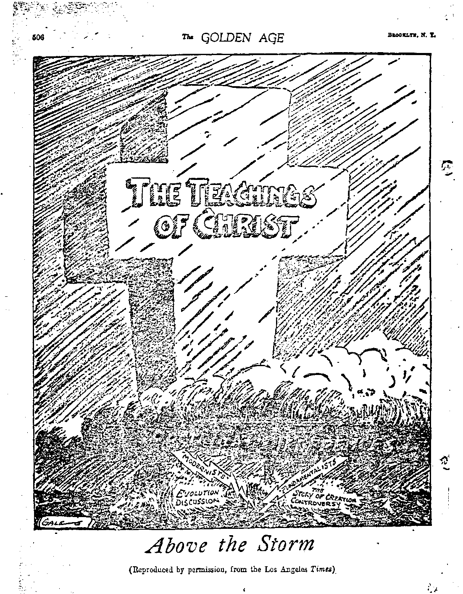

Finance—Commerce—Transportation
Review op the News or the World.........
Charges of Fraud and Graft...........
Russian Banker Imprisoned...........
..The Federal Reserve Monster..........
Federal Reserve Seamstress Hard at Wouk (Cartoon) .
Coin Harvey’s Obelisk..............
Political—Domestic and Foreign
Great Britain, France, Belgium.........
Germany, Hungary, Rouinania. Bulgaria, Italy . . .
Religion in the East, Palestine. Persia......
India, China, Japan, Mexico, Honduras, Haiti . . .
Reports from Foreign Correspondents......
From Canada...............
From Great Britain.............
I Agriculture and Husbandry
i Danish Farming Notes..........
Travel and Miscellany
The Weather and Its Freaks.......
Physical Changes Are Noted........
Giant Icebergs Breaking Loose.......
Rain-Making Experiments.........
Insuwnce for Damage by Storms......
Forecasting and Its Uncertainties......
In the Storm (Poem)...........
Religion and Philosophy
A Literary Masterpiece..........
Above the Storm (Cartoon)........
God's Promise to*Bless Mankind.......
Why the Promise Was Made........
Channel of Blessing...........
Time and Effect of Blessing........•
The Old Must Pass (Poem)........
Studies is “The Harp of God’’.......
Cabtoon from “Yale Record’’........
493
493
494
500
501
504
. 493
. 494
. 495
. 406
. 49T
. 49T
. 498
493
433
484
486
483 489
491
492
505
506 -
503
509
510
510
511
511
Published every other Wednesday nt 18 Concord Street, Brooklyn, N. Y., U. S. A., by WOODWORTH. HUDGINGS A MARTIN
Copartner* and Proprietor* Address: 1* Concord Street. Brooklyn, X. I*., U. S* A.
CLAXTON J. WOODWORTH . . . Editor * ROBERT J. MARTIN . Burducss Manager WM. F. HUDGINGS . . Sec’y and Trens.
Fivh Cknts a Copt—$1.00 a Year Make Remittances to TT1C G0LDEX AGB
Forsxom Omcts: British.....34 Craven Terence, Lancaster Gate, London W. 2
Canadian..........?s-40 Irwin Avenue. Toronto. Ontario
4nst/alosinn.......493 Collins Street, Melbourne, Australia
South African......G Lelie Street, Cape Town. South Africa
Entered <• lecoudclaM matter at Brooklyn, N, X., under the Act of March 3, 1870
Volume V
-5SM2
Brooklyn, N.Y., Wednesday, May 7, 1924
-- Number 12T^
WEATHER is perhaps the most talk-producing subject in the world. It serves as a universal and continual silence breaker. , It comes to the rescue of the embarrassed, and relieves the monotony of many trying situations. Millions of tons of breath are wasted annually on the subject of weather. When minds grow sluggish and conversations lag, how natural it is for most of us to play ping-pong with the weather!
He said: “I think the weather is awful.0
She said: ■ “You shouldn’t grumble at the weather. If it were not for that, you’d have nothing to talk about.0
We may differentiate between climate and weather. Climate is the normal characteristic of the weather for any locality. The most potent causes regulating climate are latitude and altitude. Perpetual snow and ice in the polar regions and on mountain peaks are the climatic conditions normal to such places, while in the torrid zone grasses, fruits and flowers thrive, and beasts, insects and birds multiply and sing and play because the environments are conducive to such activity. Also, sea and air currents have much to do with determining climatic characteristics for any country.
The Himalaya mountains cause the Indian monsoon rains. The monsoon is a trade-wind of great influence on the climate of the world. From May to September a steady air current sets in from the southwest, laden with moisture from the Indian Ocean. A second monsoon from the northeast prevails from November to April. The monsoon region extends to the Pacific as far as Japan. Thus the Himlayas may be called the father of the weather.
Weather'may be said to be any meteorological phenomena, or oddities of climate. Any excessive hotness or coldness, dryness or wetness, storminess, fogginess or cloudiness, sudden changes of temperature, or prolonged spells of
483
any of these, and even abnormal presence or.^
absence of sunshine, are all properly weather^ conditions. .
The earth has its sunshine and cloud centers. " ■ At Tucson, Arizona, and Gunnison, Colorado, it ^ is safe for the hotels to advertise “meals free -on cloudy days0; for in the latter place there have been but six cloudy days in the last ten years. Yuma, Arizona, is the center of the chief' of the sunshine zones in the United States, with spots of secondary prominence located in southern California, southeastern New Mexico, west-* era Texas, and in Florida. These sunshine cen- . ters receive from eighty percent to eighty-five percent of the sunbeams aimed at them annual- < ly. The rainfalls in these .areas are negligible. The cloud centers are located in western Washington, near the southern portion of Puget Sound, on the southeastern shore of Lake Ontario, and in the upper peninsula of Michigan. From seventy-five percent to eighty percent of the days in these places are either cloudy or partly cloudy.
Best Climate in the World
LTHOUGH only eighty miles from the equator, the city of Para, Brazil, boasts
of the .best climate in the world. It enjoys a perennial climate of what might be called mild summer. A gentle shower of rain falls almost i every afternoon in the year, which, together with the welcome trade-winds blowing in from the Atlantic, tempers the intense heat of the sun and gives Para a climate that for evenness and agreeableness probably cannot be surpassed. ?
But we must not think that all around the world near the equator there is excessive heat, or even mild summer weather. Let us remember that on the 21st of September the sun is over the equator on his trip southward, and that at that time the sun’s rays are projected straight at the earth, so that at the equator the
' < '484'
sunbeams would be dancing straight up and
■3
BBOOKX.YV* W. X ■
dition and is shallow, and the trees were not
down, delivering their full energy of heat. An officer on one of the All-American Cable Company's ships writes that on October 15th while ’ crossing the equator at noon, southbound on the western coast of South America, he was com. pelled to don a heavy blue uniform instead of ■. the white duck suit which he had worn for three months around Panama. Before arriving at Santa Elena, Ecuador, 150 miles south of the equator, under more direct rays of the sun, he was wearing a sweater additionally under his coat. This was at sea, probably 100 miles out; but overcoats were being worn on his arrival at - Lima,.Peru, which is something less than 800 miles south of the equator.
Perhaps, after all, the best climate in the . world ia right at home, wherever we live. “The search for a better climate,” says the Journal of American Medical Association, “frequently means, as every clinician well realizes, a change in something more than meteorologic environment It is not the air for the lungs, the temperature for the skin, the altitude for circulation, or such incidents that alone are sought. Social, mental and physical changes occasion their own beneficial or baneful transformations.”
What the poor world is most in need of, then, is a peace of mind, a quietness of heart, and the elimination of the causes of worry, envy, jealousy and selfishness. These and many other good things are promised as the heritage of humanity during the reign of Messiah, the kingdom for which we still pray.
CLIMATIC changes have been noted in these columns from time to time, occasioned by shifting of ocean streams, receding of the ice ■■ zones, and changing of air currents. Mr. Charles ■ Lathrop Pack, President of the American Forestry Association, in explaining the reason why ’ many of the trees in Central Park, New York 5 city, died a few years ago, attributed it to chang-,'ing atmospheric conditions, which have been < going on for over twenty years.
\ There was a decided decrease in rainfall, much of which fell during the summer months, when/most needed; an increase of wind move-pmeats; and a general decrease in humidity extending: nvftr r five-year period. These were Vcontributing causes; for the soil is in poor conable to stand the increased lack of moisture.
Much rain falls on the ocean near its points of absorption. Tropical regions tend either to rainy seasons with a high annual precipitation, like the valley of the Amazon, with from eighty to one hundred and twenty inches, or to a low average, like the Peninsula of Yucatan in Mexico, with about fourteen inches, or to none at all, as in the desert of Sahara.
In the United States the rainfall figures run from ten inches in southern California to ten< to thirty inches in the high Western plains, increasing to twenty to thirty inches in the Missouri valley, rising to thirty-five through the Ohio valley to the Atlantic coast, and increasing to sixty on the Gulf coast.
There are many reports that the Arctic regions are wanning up. Explorers and fishermen find the climate moderating about Spitsbergen, and causing rapid changes in flora and fauna. Old glaciers have disappeared. For five years these changes have been noticeable. It is estimated that the United States as a whole, winter and summer, has warmed up one and three-tenths degrees since 1897. One degree in temperature is equal to about 100 miles in a north and south direction. So warm was it two years ago in the Swiss mountains that many of the ice bridges, used for years, gave way.
Seals have been leaving their old feeding places in the Polar region and seeking cooler water farther north. Land is appearing where formerly there were vast areas of ice. Fossils of a tropical fern have been dug up in Greenland, showing that in the antediluvian period there Was a warm climate with tropical vegetation where the glaciers are now melting away.
Scientists generally are at sea as to the cause of the earth’s wanning up. To them, the earth, millions of years ago (1), was a molten mass, red hot, and for ages it has been cooling. The ( sun also, say they, is gradually cooling. So,' scientifically, as the earth is cooling and the sun radiating less and less heat, the earth geta j warmer and warmer I It is estimated that the heat in the center of the earth ranges from 3,000° to 180,000° Fahrenheit. Some think that the increase of heat on the surface of the earth is due to the disintegration of radium in the rocks; others attribute it to radioactivity; and still others think that the earth is radiating heat which was stored up* during condensation
Hat T, 1921 from the original nebula, or that a chemical reaction of some kind is taking place.
Two summers ago the Laplanders enjoyed their first retL summer weather witliin the memory of the oldest inhabitants. The thermometer rose to 86°, and the Eskimos had to lay aside their furs.
There are warm spots in the far north. Little heed was given to the reports of trojfical regions north of Porcupine River, latitude 65®, longitude, 144°, Alaska, until 1912, when a party of explorers noticed that the thermometer began suddenly to rise from 40° below zero to where the snow was melting; and they had to remove their warm clothing, within a space of two hours' traveling. They encountered hot springs, and came upon dense growths of vegetation. They found large rivers of warm water teeming with fish: the country was said to be alive with game.
Great volumes of warm water from the Mexican Gulf* Stream, pouring through from the Atlantic into the far north, and from the Japan Stream, swinging farther into the north Pacific at every earthquake shock, tend to moderate the waters of the Arctic region, and will, we believe, in time wear away all the ice and snow and relieve the frigidity of the entire north. The San Francisco earthquake is said to have changed the Japan Stream to a course 1,000 miles farther north, and the recent Japan earthquake changed its course another 150 miles farther north.
WHILE the Japan Stream and the Gulf
Stream are pouring great volumes of warm water into northern latitudes, the Arctic Ocean is doing its best to disgorge its surplus-into the south. In the Strait of Belle Isle, a narrow channel separating Newfoundland from Labrador rushes the water from the Arctic in what is called the Labrador current. This stream " makes eastern Canada and the New England states cool in summer and quite cold in the winter. Some engineers maintain that this stream could be diverted by building a dam, which would cost $10,000,000 or more.
Such a dam would force the cold waters out into the Atlantic, perhaps intercepting the Gulf Stream and causing it to hug the American side of the ocean rather than the British Isles. This would give eastern Canada and Newfoundland
GOLDEN AQE . -
much wanner weather, and England/tnight^B^^
come as cold as Labrador. As England dependent on the Gulf Stream for her warm^ weather, what a calamity would befall it if Gulf Stream should be diverted from its pres-/5 ent course! . <45
Man’s ability, however, to protect himself : against cold is much greater than his capability to defend himself against excessive heat and ’ humidity. Changes are bound to take place, • but perhaps they will come slowly enough to i permit man to adjust himself without any special inconvenience. ■ :
The Arctic Ocean is warming up; icebergs are growing scarcer; and in some places the seals are finding the waters too hot and are moving northward, according to a report from . Norway. But the United States Weather Bu-’ reau says that this is not so. It is said to be able to produce records that will disprove any claim of permanent shifting. The fact that the last two or three years have been unusually mild, with the quite unseasonably warm weather last fall until the new year, means nothing to the weather bureau. Periods of noticeably warmer or colder weather will come, but there will be no change in the general average, is its view.
AN UNUSUALLY mild winter, at least dur-■ ing the early part, was prevalent this past season over Russia and North America As late as the first of December the thermometer registered seventy degrees in the central part of Russia; lilacs bloomed in Kieff; violets were sold in Odessa; the cherry trees were in bloom over a large area; strawberries in every stage of development were found at Stratford, Ontario, December 20th; and the winter grain, which begins to sprout under the snow in the spring, sprouted and came up.
Generally in the' Gulf of St. Lawrence the weather at the first of December is severe. But this season it was so mild that the inhabitants of the district were deprived of their usual winter employment and their ordinary catch of fish, and were longing for real winter to come. They cared nothing for ripe strawberries and butterflies on the wing.
Farther south, in the United States, houses which ordinarily require plenty of artificial heat after October first, were comfortable up until
?j nearly Christmas with little or no heat except that generated in the kitchen range.
On the other hand, the winter weather in the British Isles was unusually severe. Fogs were unusually heavy. South of London a passenger train on the London and Southwestern Railway, Sf: headed for Portsmouth, lost its way and ran ?>" several miles on the road to Southampton, beY fore the fact that it was on the wrong track was discovered.
\ The evidence accumulates that the climate of ? the northern hemisphere is. gradually changing.
The north polar ice-fields are melting; Ameri-; can springs and falls are much longer than heretofore, the summers are shorter and not so hot, and the winters are often shorter and not so cold.
Without a doubt, in our judgment, the Lord . is making climatic conditions such that the vast arable plains of northern Russia, Siberia, ’ Alaska, ahd Canada can be opened up to settle* ment. These areas will be needed, at first; for the population of the globe is destined to be ■ tremendously increased soon by the resurrection (gradually, every man in his own order) of all that are now asleep in death.
Winnipeg, Canada, which usually has its 5-below and 20-below weather in November and December, last fall had semi-tropical weather. * Three times during that period Jack Frost . threatened a visit, but as many times some . giant got him by the whiskers and forced his . retreat. The Yukon river at Dawson was open as late as November 22—something unheard of ; ? and Alaska was extraordinarily temperate until - after December 1st. Santa Claus rode deerback 4 last Christmas. Some of the leading meteorolo-? gists of Canada are inclined to credit the warm - weather to the shifting of the Japan current. , -But Old Boreas got behind Jack in good shape '■'early in January, and pushed him without 1 mercy dnto the far south.
’>■••• The temperature soon warmed up again. One . j city reported 32°-below weather one day; and ; the very next afternoon (January 6th) the thermometer rose to 38° above, a change of 70° in C thirty-on^ hours. But the cold came again, and s .the rest ol January and February were nearer '-- the normal winter weather.
cold snap on the 28th of January evidently ;-tried to make up for lost time; for in northern - Ontario temperatures ranged from 40° to 60° f?bfelow zero; this with a high wind followed a heavy, snow storm, greatly hampering train movements. At the same time in the northern part of New York state the mercury dropped to 39° below, and at Syracuse it got as low as ' 12° below. This sudden breath of frigid air was quite severe on the dandelions, pear blossoms, and roses in southern New Jersey.
FOR several years it has been necessary in the spring to watch for icebergs in the north Atlantic waters; for they are becoming more numerous and larger than formerly. In 1912 the Titanic (the unsinkable ship) collided with one of these, and went down. An iceberg last spring was so large that it was estimated’ that it could furnish ice for nearly all the homes in the country for the season. It was one-third of a mile in length, and was seventy-five feet out of water. Three hundred large icebergs were located south of Newfoundland last spring by the ice patrol; and 195 steamships appealed to the patrol for information, and instructions to fit their particular cases were broadcast twice daily. Additionally, forty-six ships which were bearing down unawares into the icebergs, also received warnings.
The destruction of two large icebergs that drifted down into the steamship lanes was accomplished by the use of wrecking mines. Thia was the first use of explosives for the destruction of icebergs ever made. One iceberg of quite large dimensions was seen over 100 miles farther south than they usually drift
LAST May was reported to be the coldest in fifty-two years at Cliicago. Nearly the whole of June was wintry in France, and on the 19th that country was shivering amid snow. It was also frosty and disagreeable during the' June nights in England. At Natal, Cape Colony, and the Transvaal of South Africa, last September, a blizzard swept over the country, so terrifying the natives of that region that explanations of the whites could scarcely reconcile them to the seeming miracle of snow.
Following the coldest June hi the history of England came in July last the hottest weather they ever experienced—129° in *the sun. The heat extended several thousand feet into the air; and an air pilot going 100 miles an hour between Manchester and London was compelled
to discard his coat. It was theorized that the heat was caused by the explosion of a dump of German shells at the Camp of Domeger. Windows within a radius of one and one-half miles were broken, fragments of the shells fell two-thirds of a mile away, but no one was injured. There were many deaths from the heat, however.
At Bazra, in Asiatic Turkey, in August, 1921, the thermometer stood at 128°, and the toll of life was heavy. This heat wave rested over nearly the whole of Europe. A severe drouth ^in July and August, 1921, extended over a large part of Europe while they were having their heat wave. Glaciers in Switzerland receded. Normally, from January to June England gets eleven inches of rainfall, but in 1921 she got about half the amount. Belgium was also hit hard. Ireland suffered at this time; and in October, 1921, there was an excess of heat and rain shortage that was world-wide, the worst for the preceding fifty years. For the five months preceding July the rainfall in London was only a trifle over four inches, the water shortage being the worst for sixty-four years.
.Water rationing was common, and in some places water was selling at two cents a bucket. The river Shannon in Ireland, the largest on the British Isles, had dried up to such an extent that it could be waded across in many places. During this terrible drouth a foolish prayer was offered for the postponement of rain because the first Monday in August is a Bank Holiday, which depends upon fair weather; and many thoughtlessly said: "Amen.”
The year 1921 was New York's hottest and driest on record. The temperature was an aggregate of l,04G° above normal; the rainfall was 1014 inches less. New York's coldest year was 1875, when the average temperature was 48.6°. The average temperature for fifty years has been slightly under 52°.
Following the drouth in 1921, some one in describing it said:
"The old spheroid known as the earth is emerging from what some human diagnosticians might call a severe attack of meteorological mumps. It has been accompanied by an intermittent fever, manifested in a world-wide heat wave of unusual length and intensity, in spite of crista and relapses—earthquakes, tidal waves, cloudbursts, typhoons, waterspouts, hailstorms, etc.”
As late as October water burst through the Gruben glacier in the Bernese Oberland, Switzerland, as a result of the long hot spell which^ caused the ice to melt and form small lakes and the surrounding district was flooded. /
It is said that June, 1922, was the wettest^ June the United States has known since the <; inauguration of the Weather Bureau, 187L But June, the following year, was very dry in New < York; and shrubs, bushes, and many grasses // were killed. ./
’Sometimes rain is a hindrance, as in the case of Napoleon, when he was hindered from making an earlier attack on Wellington at Waterloo. But sometimes it is an advantage; for Lincoln J. Carter attributed his millions to the success of his first melodrama, which was very well attended as a result of a heavy rainfall on the Sth of June, 1889. It is, of course, according to viewpoint. A farmer wants dry weather and sunshine so that he can put up his hay; his neighbor wants rain so that his cows may have more grass—to give more milk, to get more money, to get more land, to raise more grass, to feed more cows, to get more milkl
OGS are produced by the condensation of moisture in the air near the surface of the earth, or it may be that a cloud has descended and enveloped the surroundings. Cold air passing over warm water will produce a fog. Warm, moist air passing over cold land will produce the same result. The meeting of cold currents from the Arctic ocean with the warm waters of the Gulf Stream southeast of Newfoundland produces a perpetual fog. Puget Sound has considerable fog. The fogs in London are proverbially dense, and a person not only sees the fog but feels it and smells it In November, 1921, the fog was the densest in twenty years: trains, cab drivers, pedestrians, everybody, had to stop right where they were and wait for the fog to lift. At times this fog would roll like a huge blanket with varying degrees of thickness.
A reporter said:
“The Londoner pays $6 a year in cash for his beloved fog, besides breathing 22,400,000,000 sooty particles of the fog every day during the season. Scientists by means of special apparatus are able to weigh the fog. The latest estimate of the weight of a heavy fog covering the 443,424 acres of Metropolitan London is stated at the South Kensington meteorological office to be 900,000 tons.” , . .
| 488
GOLDEN AGE
Bsooklxx, N. X
- The London Herald says:
;' “There are many things to be said against a fog as a form of human lung-fodder. But there are just one or two things to be said in its defence. Fog is a democrat, a leveler, a practitioner of fraternity. It puts us all in S- the peasoup together. No amount of money can dispel J . a fog. ... A real fog is a salutary warning to the ' people who are always chattering about the triumph of ' civilization and the marvels of mechanical science.”
' But in October, 19.22, it was demonstrated at Pittsburgh, Pa., that a fog could be diminished; for a successful experiment was conducted on the Monogahela river. An attempt was made to lay a complete blanket of oil on the river, but the surface to be covered was so extensive that the mixture, which spread quickly, became too attenuated wholly to choke off the vapor. This is too expensive a method to meet with great enthusiasm, unless there could be a tax placed upon the people of that locality.
. “When the frost is on the pumpkin” it is on everything else. It is a beautifier. Those who have not seen frost on trees, shrubbery, tele
. phone wires, and window panes, do not know the sublimity of that kind of scenery. When frost is in season no one objects to it, but frost out of season is damaging; in the spring, to the blooming and fruiting of the trees and garden plants; and in the fall, to the proper maturing of late crops. A heavy late spring frost may destroy all the prospective fruit in large areas; such as apples, peaches, oranges, etc.
Along the 45° latitude, beginning in Wisconsin and extending west for over 300 miles, frost rarely nips anything in the bud. The cold of winter hangs on so tenaciously that when it ■ does let go, and the sap begins to liven up the , trees and shrubbery, the spring is so far along that Jack Frost seeks his hibernating quarters in the far north. For some reason cherries do , . not dq well in Minnesota, while plum trees will ’ bear"in abundance. However, killing frosts visited the northwestern states last fall as .V early as September 14th, but after that it was ‘ unseasonably warm until after New Year’s.
MANY methods have been employed to ex. periment in rain-making. Spraying the clouds with liquid air has been tried; likewise -'-^explosives, conjuring, prayers, and electric \ 'sand have been used. But none of these meets with pronounced success. Elijah, the prophet „ of the Lord, prayed that there might be no •. rain; and none fell for three and one-half years. Then he prayed for rain, and a drenching rain was the response.
The Weather Man looks down upon the bringing of rain by any artificial means. He claims that it will dry up what wetness there is without producing more. Airplanes have been employed to throw electrified sand into clouds to make them shed their tear drops, and with some degree of success; but it seems to be too much of 4 an undertaking to be practical. Scientists, of * course, are behind the rain-making experiments. It is claimed that the droplets of water in the air are formed about dust particles; for even ' the infinitesimal electron has served as a nucleus of condensation in laboratory tests.
Sand particles, charged with positive electricity (the electrons are negative), serve to bring about the coalescence of vapor particles which, when accumulated to a certain size, gravitate to earth as rain. On the theory that a fog is simply a cloud on the ground, the chemists supporting the rain-making idea say that electrical sand will cause it to be precipitated and disappear. An experiment with electrified sand last year at Dayton, Ohio, is said to have brought minor success.
A very unscientific and irreverent method of producing rain is the Baal method—by prayer and supplication either to an unknown deity or to a deity unknown by those who pray. The natives of India have a unique way of appealing to their rain-god. The rain-maker hangs his assistant, head downward, and pulls him back and forth until the rain comes. In Africa, if the > rain-maker fails to produce rain when the attempt is made, he is put to death.
Ever since the days of childhood we have heard that explosives produce rain. This tra- i dition oddly enough goes back to the centuries 4 before gunpowder was used; but then the. rain was caused by the clash of the weapons againsj shields and armor. It is said that the Weather Bureau vouches for the fact that great fires sometimes cause rain. The heated air rises in volumes, condensing the moisture of the air,. forming clouds; and rain results.
Mr. C. M. Hatfield, of California, is said to be a rain-making artist. He used a huge tank in which the mystic chemical mixture was con-; _i fined. This tank was transported to the place ; where the rain was wanted. By adding a chemical the mixture started to brew; and as the brew breWed the man in the clouds from either joy or sorrow began to cry. It is claimed that in July, 1921, Hatfield caused weepings in Washington state to the extent of 4.24 inches. Then some farmers in Oregon offered him $3,000 an inch to produce rain forlhem. The next year Hatfield appeared at the Vatican, being anxious to explain his secret to the Pope? We have not heard of him since.
"St. Swithiifs Day, if thou dost rain, For forty days it will remain.
St. Swithin's Day, if thou be fair, For forty days 'twill rain nae mair.”
Marconi predicts control of rainfall by radio. All the work, he says, will be done by the sun; man will merely press the button. The developers of water power and of radio transmission of electrical energy produced by water power will become exporters of electrical energy to less fortunately situated countries.
SOMETIMES much damage is done by hail.
Hailstones as large as hen's eggs have fallen in such quantities in the heart of the summer season that massive fields of growing corn were reduced to poor fodder for the cattle, trees were stripped of every vestige of foliage, shingle roofs were so shattered that complete re-roofing was necessary, every window pane on three sides of the houses was broken in, and chickens were killed by the thousands.
Sometimes snow will pile up on the roof of a building until it caves in. Ice-floes will occasionally jam a bridge until it gives way. Hurricanes leave in their train wreckage, demolished buildings, the maimed and the killed; ships are damaged; crops are ruined, and whole orchards uprooted.
But the dangers from hurricanes and typhoons are limited to the areas which they frequent. Tornadoes are more numerous, and are liable to spread their destruction in their narrow 'paths over much more of the earth's surface.''Strictly speaking, a cyclone is a circular air current covering a wide area and is not dangerous. .
The taking out of insurance for damage accruing from rain was considered a novelty until five years ago, but it is becoming quite'aTmai^ ter of business. Following the example of Grea^ Britain, Americans insure against every variety*? of loss which may be occasioned by rain^ lK 1921, it was reported that over $1,500,000 were] underwritten in rain insurance for the Fourth] of July, and it was thought that Labor Day] exceeded that figure. There was a policy writ-) ten covering the Dempsey-Carpentier fight, the premium of which is said to have been $75,000.<
Colleges insure against rain when there is to;
be a football game. State and county fairs* also try to cover the loss from rainy weather; by covering with rain insurance. It is said that! summer hotels likewise carry rain insurance fori the week ends, and so do also department stores I on days when special bargains are advertised, ,-j The consumer, of course, in the end pays thej "freight", together with the taxes, the insurance, I the overhead, the excess profit demanded with* the spirit of the times, the interest on the invest- i ment, etc. Satan’s kingdom, like Pharaoh’s, has> been a hard taskmaster; and what a load will be lifted from the shoulders of humanity when Canaan, the Lord’s kingdom rule of righteousness and truth, is reached I
THERE are periodic changes of weather which we shall not attempt to explain in this article. We have the seasonal changes attending the earth’s relation to the sun in its swing in its orbit The moon has its seasonal; influence. There are also storm cycles of about | seven days, and the reactionary storm periods’ in between. All the planets exert their influence,! diminished or intensified, upon our atmospheric; conditions, according to their relative position, i
The “Bruckner period” is a system by which I weather prognostication may be guessed at. The larger cycle is thirty-five years, in which are cycles extending from five to ten years. There will be thirty-five years of dryness, and then thirty-five years of wetness. The London Daily Herald informs us that we entered the Bruckner dry period in 1921. i
There is a “sunspot period” of 55.6 years, J also. These are cycles of cold periods. The * years 1813,1814 and 1815 led up to 1816, which i is known as the “year without a summer.” We I are now in the years leading up to 1927, when' the cold spell is again due to culminate. Pe>
■ haps the cold spring of 1923 was the beginning of that period.
r But another theory is advanced that not all \ . of the cold should be attributed to the sunspot maxima of that year, but partially to the terrific explosion of the volcano Tomboro in the island of Sumbawa, Dutch East Indies, the year before (1815) which filled the upper atmosphere
■ with hundreds of cubic miles of fine dust. In a few months this fine dust covered the earth and lasted for over two years, interfering with the proper radiation of heat from the sun.
The prophecies seem to show that there will * / be due in the late fall of 1925 another explosion
' of something which will fill the earth with small particles of something—we know not what. This time it may be a symbolic explosion, antityping the blowing off of the lid of the Teapot Dome, which has filled the upper atmosphere with great hunks of reputations and left the stains of oil everywhere.
Signs indicating weather conditions are numerous; some are foolish and superstitious, and some are based upon fact. Some go by the goose bone; some by bullfrogs. Some can tell
■ (T) from the coat of fur the skunk takes on
Whether a winter will be severe or mild; and from the way the squirrels gather the walnuts Whether the winter will be early or late.
For outlying settlements to be surrounded by great packs of wolves indicates cold weather. The itching of frosted feet is a sure harbinger of warmer weather within forty-eight hours.
. Nearly every one has his sign; and it is according to where one lives as to how it works. A native of Africa grieved the rain goddess, thus causing a drouth; and the native paid the penalty with his life.
The following by E. B. (Fanner) Dunn, formerly of the U. S. Weather Bureau, taken from Science .and' Invention, is interesting:
"Clouds are not always an indication of rain or snow. Certain clouds are really heralds of fair weather. A mottled sky, with light drifting clouds, foretells fair weather. If wind comes before the rain, the squall will be of short duration. If rain comes before the wind it may last ah'hour or two. The heavier the rain the quicker the squall passes. . . . When fog sets in before midnight, the following day is likely to be rainy; but if . fog appears in the morning after sunrise, the day will be fair. . • .A general increase of cloudiness at sunset ; means rain or snow. Tufts of cloud forming a dappled or mottled sky • indicate fair weather. . t . Small inky / . •
clouds indicate rain. In cold weather, a bank of dark clouds forming in the north or west with a southerly or easterly wind indicates rain or snow. An excessive clearness of the atmosphere is an indication of rain or snow to follow within twenty-four hours. A low, overcast sky, with light northerly wind in winter, foretells snow. Ragged clouds moving rapidly indicate wind and rain. Dew indicates a fair day. Wind or a cloudy night prevents frost or dew. A yellow sunset foretells rain; a bright straw yellow, wind and rain; and yellow blending into orange, fair weather. A red sunset, a fair day. A red sunrise, a wet day. A gray sunset, a wet day. A gray sunrise, a fair day. Dark Indian gray sunrise or sunset, rain. Pale green at sunset, rain. Combined green and red sunset or sunrise, probably rain. A red disc at sunset means fair and warmer. Cool wind over a warm surface of water, or a warm wind over a cool surface or water, creates fog. Sudden fall in temperature causes showers. Sudden rise in temperature, fair weather. High temperature and high humidity, thunder-storms.” >
“Not till clouds have hung above us, Slaking dark the bright blue sky, Do we see the real beauty
God has made for every eye.”
VERY now and then there is a surprising variation of weather from what is normally expected. This may be experienced in any time of the year, and almost anywhere. That the earth is under a terrific strain in keeping her orbital equilibrium amid the attractions from the other planets of our solar system, some astronomers have often noted. Sometimes when it is dry, it is dry; and when it rains it pours. A hot Hay may be followed by a cold June; a cold September may be followed by a warm October.
When the long drouth of 1921 was broken in Switzerland, rains fell in such torrents that railroad bridges on high elevations were washed away. There are some localities situated between hills where there is no attempt to build bridges. The stream beds are dry most of the time, Ijut after a hard rain the streams will swell with such rapidity that an automobile overtaken in the midst of one would have to be abandoned to its fate. The streams will be impassable for a day or two, and within a week will be dry again. Congressman Rainey and his wife had such an experience in Pike County, Illinois, a few years ago.
Last May there was a blizzard which extended
as far as Texas. A few years ago in the latter part of May there was such a heavy snow storm in Central Illinois that trains were tied up for twenty to forty-eight hours. Not even snowplows could get through in some places. But the snow melted quickly and soon was gone.
In South Africa, in February, 1923, (their summer) the crops were suffering from a long and terrifying drouth in the inland ai*eas of Cape Colony; and less than a thousand miles north in Mashonaland the natives were resort-J ing to human sacrifice in order to save the crops. Yet in the Transvaal, which lies between the two parched regions, there was wetness above normal. This was a very unusual thing.
A wireless expert laid the freakish weather to the radio. But a scientist furnishes an alibi for the radio, saying that there is not enough electricity used in broadcasting to affect the atmospheric conditions.
The abnormal results of the convulsions of nature began to be noticed about August, 1920. Since then drouths have caused the starvation of over 2,000,000 people; millions of fish have died in Europe alone. Floods have caused damages to the amount of $15,000,000; and hundreds have been drowned. There have been two damaging waterspouts; hailstones in Cuba destroyed three hundred houses, and many were killed; heavy hailstorms were reported in Rome and Greece; cyclones have been numerous; lightning struck many oil wells in Texas and Mexico; glaciers melted and flooded great areas. There have been no less than twenty-five volcanic eruptions; and no less than seventy earthquakes, of which the most destructive was the one in Japan; and two great ocean currents have been shifted.
Some of the really odd things are as follows: In January, 1923, in northern New York state, | the snow was sixteen feet deep on a level; in October, 1922, at Alexandria. Va., the rain fell in a spot ten feet square: millions of frogs disturbed the slumber of Junction City, Kansas, after twenty-four hours of hard rain; in November, 1920, there was a rain of blood upon Monte Caylo which lasted one and one-half hours, covering the roofs, roads, gardens and shrubbery Vith the sticky crimson.
In November, 1921, near Parkersburg, W. Va., rain fell for more than two weeks upon a patch of ground about twenty feet square. Bay and night, clouds or no clouds, the rain.''continued!^ This last phenomenon was explained byzfhe^ owner of the premises, that there were el^venS feet of sand covering a clay foundation) that§-the sand was always moist, and that on account^ of the warm weather moisture would rise in tBsM air, condense, and return to the earth. So many £ people got to visiting the place that finally twenty-five cents was charged for admittance.^
It was reported in August, 1921, that a cyclonic sandstorm disturbance carried more than 13,000,000 tons of dust* and dirt from New Mex-~ ico to Michigan, Ohio, Vermont and New Hampshire during a previous winter. Official records/ show that the storm traveled at an average. velocity of forty-eight miles an hour and blew-the dust, which it snatched from the plains of the southwestern states, to the fertile stretches’ of the corn belt and northeastern states. No one doubts that the wind may transport thousands of tons of rock material a thousand miles or more, but by what process the 13,000,000 tons in this instance were estimated we have no guess.
FORECASTING the amount of rainfall by the ocean temperature is what Dr. G. F.
McEwen has undertaken to do. His observations over the Southern California coastal region lead to the belief that when ocean temperatures are cooler than usual the rainfall will be heavier, and when the summer seas are warmer the rainfall will be less than the average. A fall of one degree in temperature corresponds on the average to an increase of about two inches of rainfall.
But there is a saying that all signs fail in dry weather. A man, in noting the severity of March weather, observed that when he lived through that month he always lived during the remainder of, the year.
One writer says that hundreds of thousands of New Yorkers arrange-their pleasures and business affairs, often months in advance, on special advice of the Weather Man. Another writer says that meteorological conditions are all askew, that the atmosphere is behaving in such a fashion that it baffles all observation. It often happens that when the Weather Man says “rain" it is fair; and when he says “fair* it rains. But we ninst not blame him too severely; for admittedly he knows nothing of causes behind low and high pressures. His barometer tells him the pressure where he is located. If it were not for the telegraph and radio, he would not know any more than anybody else. If a “northwester” hits the western coast at the rate , of sixty miles an hour, he can by keeping track of it, forecast the probable weather conditions in areas 500 miles in advance of the storm.
The daily forecasting and weather reports in the press are of enormous importance to all classes of business, especially to the agriculturists and stock raisers; and until a better method is discovered by the people and popularized, the present measurably unsatisfactory method will have to suffice. But everyone dependent on weather conditions should own a trusty barometer and follow its warnings,
Munich boasts of having the first tower barometer clock. It has a huge dial, nearly twenty feet . in diameter, and is situated on the upper outside wall of the Museum tower; the giant indicator shows people for miles around whether the weather will be good, bad, or indifferent.
Some claim that everyone is more irritable in hot weather than in cold. Divorce proceedings usually start in the summer, for the reason that there is, apparently, a general let down for all the family. Perhaps this theory is advanced because heat expands and cold contracts the physical organism. ,
When all nature is aglow with life, when verdure is springing forth, and when birds are mating and happily bringing to maturity their birdlets, maybe there is an expanding of the heart-strings in a yearning for reciprocal love which is not forthcoming.
Weather unquestionably, the high and the low pressure, has something to do with the moods. But whether it be one of quickened activity or languor should it not tend to affect all alike, and if e$ch be rightly exercised should there not be maintained an equipoise of heart and mind that would be conducive to the conjugal and home relations? ■
Did God intend the weather to make one peevish and fretful and another peaceful and contented, or did He intend that one should be cross as a bear and the other as meek as a lamb' Charging divorces up to seasonal changes of the weather is nothing short of subterfuge. Knowing how weak we are we should not be too exacting of others and nag at them, but
bend our efforts toward righteousness and truth and virtue and sobriety. ..
Arthur Brisbane, referring to our earth-home ; and the atmosphere we live in, said:
"We live ixi a rapidly revolving, marvelously balanced hothouse arrangement. The atmosphere protects us from inconceivable cold outside. The earth’s crust is a shield between us and liquid fire inside the earth. Thus between intense heat and intense cold we live nicely warmed, on a ball turning around a thousand miles an hour, going around the sun at a speed much greater £ than a million miles a day. If our atmosphere were . swept away, we should freeze to death in a second. If the solid ground vanished, we should melt like snowflakes landing on a red-hot stove. We should be grateful for such a finely adjusted hothouse residence, instead of taking it all for granted."
“How beautiful is the rain!
After the dust and heat,
In the broad and fiery street, In the narrow lane—
How beautiful is the rain.”—Longfellow.
In the Storm
Irene Woodstock in Our Punib AnunaU
I was hastening one day, through the snow and the sleet. When I saw an old horse standing near, on the street He looked at me sadly, with gentle, brown eye. And It seemed that he whispered, as I passed him by:
“Kind friend, I am cold, in your great overcoat And your muffler thne’s fastened so snug ’round your throat, You never could guess, since you are so warm, How chilly I am, standing here in the storm.
“The grocer’s boy drove me; and how I did dash Down the street, tip the hill, at the sfhig of his lash I While he shouted, and urged me the faster to gu On my poor, weary legs, through the Ice and the snow.
“Kind friend. If you watch, I am sure you will see
A great many other old horses like me. Who, for somebody’s pleasure, are urged to a run;
Then left, unprotected, in storm or in sun.
“I am Just an old horse, and I can’t speak my mind. But If I could talk. I would say Tlease be kind. For though I am only a horse, it is true, In feelings I'm almost aa human os you.’n
I found an old blanket I surely could spare.
I threw it across him, and fastened It there.
And I’m sure I felt better, that day of the storm.
Because I had helped an old horse to keep warm. ..
< ?
(Broadcast from WATCHTOWER WBDB, on a wave len^h of 214 meters, by the Editor)
NEARLY seven years ago Smith, Hauser & McIsaac, of New York, were given a contract for the construction of Camp Meade, erecting temporary buildings and sheds, and installing a ’ water and sewer system. The profit was to be * a percentage of the cost of the work, but the fee was not to exceed $250,000. The United States has paid for this camp $18,000,000.
The slipshod way in which the government, does its business may be seen in the fact that i only now has the Department of Justice taken ' action to recover $7,000,000, claiming that this is in excess of what it should have been. Who can tell why this matter was not investigated before payment was made? The complaint charges fraud, graft, and misuse of government funds on the following items: (1) Large quantities of material wasted; (2) excess employes used in unnecessary work; (3) persons employed without regard to qualifications; (4) persons encouracrftd to loaf rather than to work; (5) unskilled labor paid at the rate of skilled labor; (6) the same men paid on more than one payroll; (7) failure to use proper organization; (8) delays in the construction, thereby increasing the cost to the United States.
THE new Labor Government, having witnessed with joy the transformation of a coal miner and an ex-railroad porter into barons, has added the further achievement of cutting down the cost of the court dress from $750 to $75— another drift toward the good old American way of doing things. In America, when a grocer or a lawyer or a blacksmith feels that he can afford to go to Congress, he is generally pretty well satisfied if he can afford the $75 necessary for tlie coat, trousers, and vest which go to make up his court suit. But after he has been in Washington for awhile, and has gotten into what one of Mr. Harriman's admirers referred to as "the inner circle into which the rest of us may not enter," he is all too liable to change the $75 outfit for a $750 one; that is,he is until Senator Walsh or somebody else comes along and blows the cover'off the teapot. In these days of unrest and^ upheaval ‘a politician's life is not a happy one?
There are twenty-three members of the present British Parliament who served prison sen-fences during the days of the madness, due to their stand against the. World War.
Winston Churchill, who, during the World War, fitted out, or financed out of the British treasury, several of the expeditions which attempted the overthrow of the Soviet Government of Russia, has just been defeated for reelection to Parliament
HE outlook for peace in Europe continues none too bright. On this subject the London Observer says that by comparison with her neighbors, France is now the strongest armed power known since the days of Csesar. She has three-quarters of a million troops, on : a peace-footing, with swarms of machine guns,. flotillas of tanks, and a preponderance of airplanes in the proportion of ten to one. Moreover, although Germany, Austria, Hungary, and. Bulgaria are disarmed, Europe has now a million more soldiers on a peace-footing than she had before the outbreak of the World War.
HE king business is getting worse and worse/
During these times of the high cost of '
living, practically everybody else has been able . to get an increase in his wages. But it seems . that the king of Belgium is on the payroll for the same old amount that he was on before the World War broke out; and not only that but ■ recently some ungrateful Socialist actually ' wanted to cut his pay still more. If this king business gets any worse, the few monarchs that are left in Europe may find it necessary to take up some other trade. Meantime, the cardinal business continues very good; but how long it . will last nobody can say.
Denmark
ENMARK supplies forty percent of all the world’s exported butter. It is claimed for
the Denmark butter that although it is of a rich golden color it does not contain a particle of ’ coloring matter; and that a group of six Danes, once a week, names the price of butter for the world.
The Danish method of feeding cattle is to tether the cows in a line across the field so that the grass is cropped as systematically as though
mowed with a mowing machine. By the time the cows have crossed the field once, the grass on the far side is long enough to start over again. In cold weather the cattle are blanketed as they feed in the open fields.
Germany
COUNT Von Bernstorff, former German ambassador to the United States, is out with the statement that America alone won the .World War, and that no settlement of the quarrel between France and Germany will ever be made until America intervenes. But just at this moment America has . so many Teapot Dome statesmen on its hands, and is so deeply interested in the outcome of current investigations that she has little heart to interfere in European squabbles.
Conditions in Germany continue to improve. A recent report shows a decrease of 30,000 in the number of unemployed. At the same time it is said that‘at least one-fourth of all the school children are in desperate need of food; and that 'diseases rare before 1914 are now common, due to lack of milk and green vegetables. This want of food is seen in the fact that twenty-five percent of the patients in children’s hospitals are suffering from tuberculosis.
Hungary . ,
IT NOW appears that the persons who are responsible for smuggling the money and valuables out of Hungary, and thus bringing about the depreciation of the Hungarian crown, were the very detectives employed by the Government and entrusted by the Government with the task of stopping this very smuggling. This is our own modern American way of doing things. The Teapot Dome has shown us that the surest way for a man to make a great sum of money in the United States is to get into some place of honor and trust in government > service,^ particularly, it would seem, in the Department of the Interior, which is and has
• always been, a Mecca for grafters. After this-revelation of up-to-dateness, those who are cn-gaged in the Americanization of the Hungarians . in our midst will no doubt breathe easier, feeling thatthey have less to do.
Rxmta'
Ar.lrrA-NnyTt Krasnotchekoff, former Chicago lawyer, more recently manager and director ? of the Industrial Bank of Russia, has been sen
tenced to six years' solitary confinement for lending money to a brother at a less rate of interest than the going rate charged to other concerns. If the same rule was to be applied to American bankers, the jails would be full in a week. \
Roumania "* “ '
UNDER the general guidance and direction of France, Roumania has been engaged in subjugating what was once the Russian state of Bessarabia. The Bessarabians are not enthusiastic about being absorbed, however. As a consequence martial law Inas been declared, and -the prisons are full to bursting. These moves have greatly disturbed the Russians, and have added to the possibility of an explosion in the Balkans in the near future. ‘
Bulgaria
A PECULIAR, yet seemingly desirable condition prevails amongst the people of . ■ Bulgaria. The people in general have the laugh on the leaders. The Treaty of Neuilly has made it impossible for Bulgaria to maintain a standing army of over 20,000, made up of voluntary recruits, enlisting for not longer than twelve months. ’
The Bulgarians are a peasant people; and now that the rigors of military service cannot be imposed upon them, they smile at the recruiting officers and go about their business of tilling the soil and herding their flocks. The Government has tried to have the treaty annulled, or to have it changed so that conscription might be pennis- ' sible; but their efforts have proven of no avail.
Italy
SOMEBODY, somewhere, sometime, made a statement to the effect that the best possible form of government is a benevolent despotism. There seems to be a measure of truth in this. However much we may deplore the loss of the liberties of the Italian people in the seizure of the government by Mussolini and his followers, " there is no denying the fact that, in two years, unemployment in Italy has been reduced to one-third of what it was, and the number of days' work lost annually through strikes has been reduced to one-thirtieth. Industries and the general prosperity of the country have increased by leaps and bounds. ’
The League of Nations is once more proved to be an international joke in the annexation'
; and instead of looking with disappr6yS\at?ffi^ j Zionistic activities they become ardent strpjir^ , ers of the movement. .
l Doctor Joseph Silverman, Rabbi Emeritira ^K I Temple Emanu-El, was until his recent tripVto^ s Palestine an opposer of the Zionistio movement^ ( In his advocacy of Zionism in a.recent speedy L delivered in New York city he severely critic cized those who opposed the movement. He< . said in part: , . ..
"Any Jew who wilfully hinders the movement
1 rebuild the Jewish homriand is injuring his people and-i his faith. Any Jew who remains aloof lays himself* ' open to the charge of indifference to the faith of s large part of Israel.” . .
i Professor Elwood Mead, of the University of ■
, California, has made an exhaustive survey of. the various enterprises and conditions in Pales- ; tine. In speaking before 300 Jews recently he
: gave a glowing description of the possibilities ; of this once barren land, which holds such a : sacred place in the hearts of Christians, which is ; now being reclaimed, and which will eventually again flow with milk and honey. He stated
. that Palestine is destined to become the Califor-. nia of Asia which should result from the ; cooperation of American Jews. Science, drill, - and industry can make the plains of Esdraelon ■ and the valleys of Jezreel and of the Jordan a . ■ picture of rural charm and agricultural opulence.
Dr. Chaim Weizmann, head of the Zionist
. World Organization, has said that Palestine is capable of absorbing 3,000 immigrants a month. z About 1,000 Jewish immigrants per month are wending their way toward Palestine at present. In the past three years these immigrant* have built 2,000 houses, have planted 2,500,000 trees, constructed many roads, drained swamps, and ' r planted many olive and orange groves. Accord- ? *
L ing to the Bible, the Jew will be restored to the ’ -1 promised land, the land itself will become like ’ the Garden of Eden, and the Jew will be restored to covenant relationship with Jehovah.
: A wonderful future, therefore, is opening up for this much misunderstood and persecuted people. ,
THE East continues to seethe with the in* fluence of the West. Persia is feverishly agitating the formation of a republic. Members of the national assembly, who advocated this, have been attacked with fists in the House of Parliament; but this .probably only hastens th* .
of Fiume by Italy. It will be remembered that Mr. Wilson was exceedingly anxious that Fiume should not go to Italy. But Mr. Wilson is dead, and Fiume is even now more certainly Italian territory than it was the moment it was seized by the poet D’Annunzio. From the moment the town was seized, no one who has had experience with the way things go in this worid believed that Jugo-Slavia would ever get the city back.
Religion in the East
THE business of religion in the East seems to be badly tangled. In Russia, a Roman Catholic Archbishop, Zepliak, has been banished because the Soviet Government believed that he interfered with their administration of Russian affairs. In Turkey, the ruler of the Turks, Mustapha Kemal Pasha, has not only chased out the Caliph, head of the Mohammedan religion, but now proposes to do the same thing for the Grand Rabbi of the Jews. Probably it is a good thing for the Pope that he has his desk in Rome instead of Constantinople, or he might lose his job, too.
There is a great awakening among the Turks. It seems that a real Turkish Republic is in process of development The leaders of the movement seem definitely determined to westernize the country. The schools of learning are crowded, with more schools in process of construction. However, one American school was recently closed on the charge that the principal taught the Bible. In a note to the French Government the Turkish Government has declared definitely against the teaching of religion of any kind in the schools of the country. This idea was probably taken from Russia.
Palestine
EVER since the advent of Zionism the Jewish people have been divided regarding its feasibility. Interest in the movement will blaze up with enthusiasm for a time, and then will die down. Sometimes the glow of devotion will seem to be almost extinguished; but the hope of the Jew of being rehabilitated in the land of his fathers is so great that the movement takes on ever 'increasing life. As opposing Jews become acquainted with the wonderful strides in the increasing activities in agriculture, vineyards, orchards, the building of highways, and construction of buildings, they have their faith in the promises of God to their fathers revived;
day when the Shah, now 'absent in Paris, mH be altogether out of work in the Shah business.
India
ONE of the results of the World War was to give the people of India a Parliament, the duties of which, however, have been closely defined and limited by the British Government. 'Just at present, the Indian Parliament is on the war-path, refusing to adopt the finance bill on the grounds that the entire governmental sys-tern of India is unfair to the people of India, and a disgrace to civilization. The refusal of the Parliament to pass this tax measure really accomplishes next to nothing, however; for the . Viceroy of India and his Council, appointed by the British Crown, can put the law into operation whether the Parliament likes it or not. Later advices state that the finance bill has been passed by the Council of State, and certified by the Viceroy. This is equivalent to overruling the Assembly. .
CHINA is in a bad way because the soldiers, who are supposed to protect the country, have degenerated into bandits. Almost all the , inland trade of China is carried on by rivers.
Many times in the course of their journeys, the boats proceeding up and down these rivers are stopped by these official bandits, and each time are compelled to pay taxes for the privilege of going further. Moreover, several of the provinces of China are virtually independent, and charge what taxes they see fit.
Japan
THE question of the admission of Japanese immigrants is up again. United States Senator Phelan of California, an opponent of Japanese immigration, declares that 38,000 Japanese women have come into California despite the /‘gentlemen’s agreement” between Japan and t . President-Roosevelt in 1908; that they have given birth to large families; and that it is his* belief that Japan is laying the foundation of permanent colonization on the Pacific coast . which will spread quickly to other parts of the ( ; West n
; > It is claimed by the Wall Street Jcv^nal that ! the cause of the loss of so many lives in the : -/Japanese earthquake last fall, is the great quan! * tity of oil which the Japanese Government had c in storage at Tokio and Yokohama, which oil Japan was supposedly intending to use for an attack upon the United States on account of the failure of the United States Government to veto the California Alien Land Law.
Mexico
THE rooting out of the United States of the -L multitude of fake oil promoters has caused them to retreat to the Mexican capital; and from there they send out their letters to addresses obtained from their confederates across the line. The postoffice officials are now investigating these companies, who are receiving such large quantities of mail.
Sqme of the land that is described in these letters exists only upon the maps, and most of the companies have never applied for concessions. Other tracts are situated in the hottest part of Mexico, where no American could live. After Americans spend their hard-earned money and then investigate or move to their new home, they find out the true conditions, and therefore sell out at a great loss to themselves.
The Obregon Government is buying millions of dollars worth of surplus war material from the United States, which sales have been made continuously since January. It is said that eight sales have been negotiated amounting to over thirty machine guns, over twenty thousand rifles, five million rounds of ammunition, and eleven airplanes.
HONDURAS has been engaged in civil war.
Thus far about 2,000 lives have been lost. The capital changed hands; and a small squad of American blue-jackets, 167 in number, marched 100 miles from the coast into the capital to protect American lives and interests. When the blue-jackets entered the capital they were fired upon; but no damage was done, and a statement was promptly issued saying that the firing was a mistake. It was a mistake, all right One hundred and sixty-seven American bluejackets in Honduras, if they were really to go on the warpath, would turn the country wrong side out tind hang it on the fence to dry.
Haiti
THE Island of Haiti, which for several years has been under the control of United States troops, is now at peace everywhere, and the troops have been withdrawn from all interior points.
FROM CANADA
WITH few exceptions, conditions in Canada have not altered to any appreciable extent since yffur correspondent's previous report. There are, of course, those in government, financial, and church circles who persist in the practice of extracting sunbeams from cucumbers; but since they can succeed in deceiving no one who thinks—and most men are thinkefs today —there is no harm done. The man in the street looks on, and smiles a stoical smile at the sight of these once great and mighty ones amusing themselves with their own vanity.
In churchianity all is not well. If it be true— and it very often is true—that when thieves fall out honest men get their due, we may expect an early end of unrighteousness, and the possession of the land by the meek of the earth. Church union has found its way into politics; it will come up for discussion in the Federal Parliament. What Parliament will do about it, I am not prepared to say.
Someone has aptly said that mixing religion and politics may be either good or bad, depending upon how they are mixed. It is a good thing to shake a little religion into politics; but to shake politics into religion—well, that's another story. The Presbyterians, Methodists, Congregationalists, et al, are shaking goodly potions of politics into their religious beverages. Can one wonder, i. e., one who studies his Bible, that Jehovah God looks down and laughs at the spectacle of those who profess to be His ministers presenting themselves (by proxy, of course) before 235 laymen, the most of them political tricksters, in order to have their religious (?) differences ironed out?
It is said that seventy-one Catholics, seventy-six Presbyterians, thirty-eight Methodists, thirty-four Anglicans, five Baptists, four Congregationalists, one Church of Christ, one Hebrew (probably should read one Jew), one Unitarian, •■one Latter Day Saint, and three nondescripts, comprise the professed church affiliations of the members of Canada's Parliament. Of these 118, or just fifty percent, are directly interested in the outcome; the others, particularly the Roman Catholics, \¥ill> however, assist these holy men in their efforts to do that work which one preacher calls “the ideal of Jesus Christ”; namely, to bring the churches into one harmonious whole by the process of tearing each other to pieces.
While these churches are makingdesperate^ efforts to bring about some form of\union,:;ther. Anglicans in Canada are preparing for a union-with the Roman Church. A conference similar to that held in Belgium will be staged in Montreal. The Anglican Bishop, Farthing, is hoping; that the Roman Catholic Ecumenical Council* in-1925 “may start a new movement in the Boman Church whereby the accretions to the faith may’ be laid aside. With these additions to the faith, once gone,” says the Bishop, "we should rejoice indeed to be in communion with the Roman Church.” t '
The one important accretion to which Angli-? cans take objection is the presumed infallibility of the Pope. That Bishop Farthing has some grounds for hope cannot be gainsaid; and thia is in line with the statement made in the Catho-lie Register (Toronto), as reported in a previous issue of The Goldeh Age, that during the Ecumenical Council the Pope will admit that he is not infallible. '
Indeed, the revision of the Catholic textbook, '"Butler's Catechism,” looks like a preparation for the radical changes that will take place in Catholic doctrine in 192o, provided the Council is permitted to go as far as it now purposes.
Not only are Catholics trimming their sails, but leaders in other denominational systems are, perforce, endeavoring to meet the views ef, their adherents—reasonable, if radical, views which must be met or, at least, which cannot # be ignored. The word has gone forth that the churches must no longer condone war.
These leaders now admit the accusations made by the International Bible Students Association, that in the name of Christ the churches ■ preached wholesale murder. The Christian Guardian says editorially: ..
“Some of us—many of us—are ready to acknowledge our fault in truest humility, and seek pardon for our ignorance and our lack of the spirit of our Master. And . . . never again, under any condition, will war have our sanction or our blessing. . . . We have made up our minds that we must try to be Christians"
The reader may draw his own conclusions from these words, particularly the italicized words.
The Presbyterian Witness says:
“There can be no doubt that the Church of Christ in its united capacity has the power to end war; and when it speaks, the deathblow will he given to war as surely as it was years ago to slavery?*
■'M
These last-minute, or death-bed, repentances are now of no avail. Had these church leaders taken their stand for Christ ten years ago, there would have been no war. Their lamentations, now uttered on the eve of Armageddon, but remind us that “when the devil was sick, the ■ devil a saint would be/' The words of Jesus, . addressed to the scribes and Pharisees, are surely applicable in our day to these modern hypocrites and vipers. I repeat: In church-ianity all is not well:
Finances are indeed in hard straits. The boast is that the Canadian dollar is worth one hundred cents; and that, therefore, Canada is safe.
* Such reasoning is worthy of a desperate man in a desperate position. As pointed out in my previous report, Canada is financially doomed.
How can one reason that he is financially sound, when he is sunk so far in debt that he cannot find a way out! My opinion is that, financially, Canada is as sound as the minds of the men who offer such nonsensical premises for sensible men to swallow.
No statesman, politician, financier, or industrialist in Canada today knows just how we stand financially; and not one of them will offer any solution for the present difficulty.
This is not assumed; it is a fact. The Canadian manufacturers' magazine, Industrial Canada, for January, 1924, contains many state-„ ments by as many prominent business men regarding the outlook for 1924; and with few exceptions these experienced men admit that they cannot make any prognostications.
Your correspondent has nothing to gain by preaching blue ruin. If it were possible for me to say truthfully that Canada is safe and sound, I should say so with pleasure. But I cannot find any confirmation for any such statement, and am obliged to say just those things that are . ■ admitted by men who know whereof they speak.
1 The trouble in British Columbia between the
! lumber bosses and the strikers has ceased tem-
- porarily. Backed by Boards of Trade and Fed. . eral power the bosses have won out. But the . strikers, while admitting temporary defeat, are . ■ determined to bring on another strike at an ■ ' early date; and it is expected that this will ‘ involve workmen from coast to coast.
• • • 'In other words, a nation-wide strike is antici-
■ ■ . pated; and aapitalists are moving heaven and < / .earth to prevent such an upheaval. That such a
; I..- ” strike will materialize is more than likely, in . view of the unsettled conditions of lumberjacks in Ontario, and coal-miners in Nova Scotia and iu Alberta.
Port Arthur, it is said, is the Canadian seat of Bolshevism; for it contains many foreigners, mostly from Finland, who have brought their radical views to Canada. But the fact of the matter is that the reddest radicals in Canada are native sons, men of British stock, who have reached the limit of endurance, and who state openly that their objective is revolution. (
Before closing this letter, I desire to remove from the minds of my readers a mistaken notion that might possibly creep in: That this kind of talk is destructive rather than constructive. The cry today, I know quite well, is for some-~~^ thing constructive. We complain that editors of our daily papers have nothing constructive to offer; and we expect to find something better in a paper like The Golden Age. The absolute truth is that there is no such platform; i. e., nothing of a constructive nature that can be offered, viewed froxh the standpoint of human endeavor.
But to Bible Students there is a constructive platform, and one that can bring nothing but happiness to suffering humanity. It is the plan * evolved in the mind of Jehovah God, the culmination of which will mean the restoration of man to a state of perfection. The tearing-down . process is now going on, and in the near future “we look for a new heavens and a new earth, wherein dwelleth righteousness/1
FROM GREAT BRITAIN
AFTER a long spell of cold and raw weather, there are signs that the wanner season is nearing. For some time these often misty and foggy Islands have had whole days of sunshine, a very welcome change: indeed, this March., seems likely to break all previous March records ■ for sunshine. But the sun has not been sufficiently powerful to dispel the cold; for easterly winds have prevailed, and they are always cold in Britain. It is said that they come over the continent from the Russian steppes. Job's friend, the Temanite, seemed to consider the . east wind as representing foolishness. Anyway, Job was advised against taking too much of it; and still the wise man takes as little of it as is possible. Influenza, followed by bronchitis and
pneumonia, has been quite prevalent in Britain; but the trouble has now abated- It has done much damage to general health, and has advanced the death rate very considerably; but its severity and deadliness are not comparable with the epidemic of 1918.
Besides some show of life in the shrubs and trees, the birds are beginning to anno^ce that springtime is at hand. In couples they are to be seen playing about, chasing each other, and hopping about the bushes, playing hide-and-seek. Even the sparrows are feeling it, and are ’more chirrupy than usual. The gulls, which in winter make their home in the London parks, and up the river in thousands, are now leaving. They can now do better on the edge of the salt water than in London, though “feeding the gulls" is a regular feature of London winter life.
The traffic problem in London is acute, and for lack of a central authority there seems no immediate prospect of a solution of its difficulties. London has not nearly so many motor cars or automobiles as may be seen in New York, but it is said that London is not the slowest of the great cities of the world. No doubt the street traffic is well dealt with from a policeman’s point of view; but standing motors and horse vehicles block the streets, and slow horse traffic hinders it. One main cause of the trouble is the great number of buses on the streets, many more than the amount of traffic calls for. The Underground Combine, which includes the General Omnibus Company and wliich, with the exception of some tram traffic in the outskirts of the city, has had a monopoly of the passenger traffic of the city and suburbs, has lately had some opposition. At the moment there are on the streets about two hundred competitive buses, owned by seventy different companies; and the Combine is trying to run them off the streets. Their method is to shepherd the pirate bus, as the adventurer is called, by having a bus before apd another after the competitor, so that there are" three buses where one would suffice. And there is no one who has the power to stop this business, and the traders of the city are hampered by it. The Combine thus holds London up in border to serve its own interests. These competitive buses are called pirates by the monopolists, and even generally so; but they are no more pirates than those with whom they feebly compete. In the old horse-bus days, pirate buses were often seen on the streets.
They lived according to their name; fori they; got the unwary and the visitors to the city, and charged them extortionate rates. There seems to be nothing of that now. . / •;
At the time of writing, a strike of London bus-men and tram-men is imminent. At this midnight the men to the number of 40,000 will cease work. It is always the people who suffer. Filling the streets with omnibuses in order to run off competitors hurts the business of the city life; but the monopolist cares not that the city is practically held up. Refusing to work the buses and trams entails a very great hardship on the million who must come and go morning and night by their means; but the striker seeks his own interest. Every man's hand everywhere is for himself and seems to be against his neighbor.
While writing of these things it may be remarked that there are more than a dozen authorities in London who have the right to open up the streets at any time they please, and to keep the ground open as long as they like. As these always seem to wish to find something underground, the streets are constantly blocked, so that the main artery of traffic becomes no more than a narrow lane. London is beginning to prove an example of the futility of the present order of things. It lacks that which the world lacks—a central authority. One might be tempted to think that the British official Joves to pull roads up; for the newspapers report that the great exhibition preparing at Wembley, London, which threatens not to be ready for the opening day, April 23rd, has been greatly hampered by the fact that after the main roads were laid to the exhibition and were set, they were pulled up to allow gas, water, and electric mains to be laid. That is the British [and the American.—Ed.] way with a road.
By the end of January it was reported that there had been 636,000 licenses issued in Britain to holders of wireless receiving sets. No doubt there are many who have sets who have not taken out a license to hold them. The business is now beginning to get on the move.
The British tobacco companies' profit in last year’s trading shows over £13,000,000 ($65,000,000 at par). There is evidently plenty of monejj for this form of indulgence. .
U NDER the above/suggestive title, the Modern Publishing Company of Detroit has published a little book of ninety-eight pages which contains many interesting facts regarding the financial colossus which controls American credit and therefore American industry and wages. .Some of the facts in this book have < . already appeared in The Golden Age. In our judgment the writers of the book have erred in using too many slang expressions, but perhaps they felt that the subject is one of such importance that ordinary words do not suffice. With this word of regret that the influence of the book is thus impaired we mention some of its findings.
Without the investment of a cent the Federal Reserve System began business by legally commandeering six percent of the capital and surplus of the National Banks of the United States, thus raising immediately, and without any risk whatever, the huge sum of $200,000,000. For the enforced contribution of this huge capital the law limits the National Banks to six percent interest, although the average earnings of National Banks is twelve percent. Having pointed out how, by law, this immense amount of capital was raised without risk and obtained at relatively low interest, the book then shows how this method of raising capital would work in the dry-goods business and says:
<rBy commandeering capital for the dry-goods business licensed looters could control only the dry-goods business. But by commandeering capital for the banking business licensed looters could control all business! That's the difference and that’s all the difference. They commandeered capital, where it could control not one industry but all industries. They didn’t commandeer a leg or an arm of industry, but they did commandeer the life-blood of all industry and at one leap vaulted into a seat of power where their scepter’s sway really governed all American industry.”
The pext step was legally to commandeer a certain percent of all the deposits in the National Banks, a sum which the law compels the bank to carry in its reserve against its deposit liabili-7. ties. That sum, at the close of business May 10, 1922, amounted to the stupendous sum of $1,-f ; .806,464,0001 For generations the reserve depos-■- its have always drawn a minimum rate of interest of at least two percent per annum; and thus, since the law granted the Federal Reserve the power, to commandeer these deposits without coo
interest, here is a single item of profit of $36,-000,000 per annum arbitrarily taken from the National Banks and placed in the care of the Federal Reserve.
From the outset the Federal Reserve sought to control the State Banks; but being unable to reach them under the United States laws, it has resorted to the banditry several times mentioned in these columns, but not mentioned in the newspapers because the newspapers are directly under the thumb of the Federal Reserve System through the National Banks of their own locals ities.
As the Federal Reserve System is making it very uncomfortable for private and State banks, many of the latter are seeking charters enabling them to join the National Bank group. In many places State and Trust bank companies are consolidating and organizing with National charters, thus concentrating the power of the money' interests.
One instance cited in the book is where armed agents of the Federal Reserve suddenly appeared at the Cones State Bank of Pierce, Nebraska, and demanded and received $31,900 in currency for checks against the bank which they had been holding for three weeks in the hope of using them as a lever in forcing the bank into the Federal Reserve System*
Another instance cited is the situation at the Brookings, Oregon, State Bank, where at an expense of not less than $4,000 the Federal Reserve stationed a man for 358 days, hoping some day to catch the State Bank unprepared for the sudden cashing of checks. When this did not work the System sent out what it calls “notice's of dishonor” against the bank; and when the United States Circuit Court Judge Wolverton issued an injunction against that dis- 1 honorable and unjust course, the effort was ‘ made to put the bank out of business by mark--j ing against an item on a transit slip the unO truthful statement, "Bank Closed/'
Another instance is cited where the Supreme '■ Cour^ of the United States denounced the methods by which the Federal Reserve System sought to gain control of State banks in Georgia, saying in part in its reversal of a lower court's decisions:
“If without a word of falsehood,'but acting from what we have called disinterested malevolence, a man
QOLDEN AQE
by persuasion should organize and carry into effect a run upon a bank and ruin it, we cannot doubt that an action would lie. The policy of the Federal Reserve Banks is governed by the policy of the United States with regard to them and to these relatively feeble competitors. We do not need aid from the debates upon the statute under which the Reserve Banks exist to assume that the United States did not intend by tjiat statute to sanction this sort of warfare upon legitimate creations of the States. Decree reversed/*
X601
In The Golden £ge No. 70 we haveshown that civilization cannot possibly bear the burden of six percent interest The reason is simple/ Even $1, at compound interest, piles up a debt of $1,024 in 100 years, $1,048,576 in 200 years,, $1,073,741,824 in 300 years, and in -400 years would provide a sum so great that it could buy every single solitary acre of land on the face of the earth at $30 per acre, with the tidy sum of
THE FEDERAL RESERVE SEAMSTRESS HARD AT WORK '
$47,209,133,77? left over. In another four centuries it would provide a sum sufficient to cover ‘ every square inch of the land surface of the earth with a gold plate weighing eight tons. This interest game is literally squeezing the life-blood out of the people.
Now the men that make up the Federal Reserve System know all about this. They know that the common people cannot really afford to pay anywhere near six percent for the use of money. Indeed, some have claimed that even two percent will in time bring any civilization to ruin; and the Lord forbade the Jews to charge any interest at all to each other. So it becomes a matter of concern to note how the Federal Reserve System stands on this matter of accretion.
Prepare for collapse I In the year 1920 the Federal Reserve System, after charging the most exorbitant expenses, made an average net profit of 160.7% on their paid-in capital. This varied all the way from 217.4% at the New York branch down to 89.3% at the Dallas branch. The Dallas branch was the only one that made less than 110% on its money for the year 1920. In other words, the Federal Reserve System legally commandeered the people's money out of ’ the National Banks into their own maw at six ' percent interest, arid then made 160% interest on it, the real providers of the capital receiving 1 as their share one-thirtieth of the profits.
How was it possible for the Federal Reserve System to make such colossal profits? It would not have been possible if they had done a legitimate business, using only their own capital. But . they had in their hands for manipulation as they would the stupendous sum of $1,800,000,000 reserve deposits of member banks upon which they paid no interest at all. As to the noble and,considerate way in which the System made use of this hugest of all reservoirs of .liquid money, we quote from the little book another true but almost unbelievable item:
■ “Member batiks and their stockholders and depositors ‘furnish this titanic amount of practically $2,000,000,000 at three-tenths of one percent interest, and then member banks are graciously permitted to borrow from the Federal Reserve System their own money at rates varying from six to eighty-seven and one-half percent per annum.” t
The little book then cites the experiences of a bank in Alabama, a compulsory subsidiary of the Atlanta branch of the Federal Reserve System. The name of the bank is not given, for the reason that if its identification were revealed the Federal Reserve System could easily compass its complete ruin. It was a small bank; , and when the time came for moving the cotton . crop it was compelled to borrow from Atlanta*
"It had no other house of refuge. It had to borrow something over $100,000 from the Federal Reserve Bank / at Atlanta; and for the week’s period ending on July 31, 1920, it was charged and it paid as high as thirty-one ' percent per annum interest I Two months later, when, its loan reached as high as $113,000, it was charged and it paid as high as eighty-seven and one-half percent per annum interest.”
This is legalized murder; that is, it is legalized murder if it was legalized, but if not it is murder, anyway. No agricultural bank can be treated that way without passing the burden on down to the farmers beneath. And the farmers . beneath cannot bear the burden and live. The same observation is true of every other business man dependent upon the small bank for credit The book then narrates the story of the shameless slaughter of the farmers in 1920, so that the great speculative plungers of Wall Street might have the use of the funds that the farmers and small business men should have had, and bitingly says;
“Take now a look at the financial corpses so slaughtered. Here they are. Look ■’em over and don’t overlook the hands that killed them. In 1921 there were 19,625 business failures as compared with 6,451 in 1919, or an increase of 13,174—more than three for one. And the liabilities reached the stupendous total of $627,401,000^ an increase of $514,000,000 over 1919—more than five for one. In the so-called panic year of 1907, the high tide of business failures, liabilities were only $197,000,000, as against $627,000,000 in 1921. Why, if 1907 -was a 'panic year/ 1921 was a pandemic year! And here ia another destruction meter, absolutely infallible —the suicides. In the first six months of 1921 there were 4,^27 men suicides as against 1,810 for the same period in 1920; 1,982 women as against 961; 214 boys as against 8Sf and 293 girls as against 137—7,016 4 suicides for the first six months of 1921 as against 2,996 for the same period of 1920. The enormous increase in mon. suicides—over two and one-half for one—tells its own story. They came from all classes, bankers, merchants, farmers, laborers and professional men. Nona know how many of this enormous increase, the largest since statistics have been kept, were driven to desperation and to death from hunger, from unemployment, from the loss of life's toil or from the failure of enterprises in which they had spent their lives. No statistics can summarize human emotions, but they can tell and they do tell of the greatest holocaust of suicides ever ravaging this land—undoubtedly due to industrial tragedies staged by the cold-blooded butchery of production. This much is certain.”
Details are given as to the shrinkage of farm Raines under the policy of removir the credit from the farmer and placing it in the centers of speculation. The official reports of the Federal Reserve System show plainly that this very thing was done. No one can deny it and no one can justify it.
"Here is what this Tragedy of Drastic Deflation did to the fanner as measured for the years of 1919, 1920 and 1921:
"Value in 1919_________$13,500,000,000
"Value in 1920 9,000,000,000
"Value in 1921_______5,675,000,000
"In each of these years there was practically the same acreage under cultivation, 350,000,000 acres. In 1919, farm products were worth $39 per acre; in 1920, $26 per acre; and in 1921, $16 per acre. Here is where the Federal Reserve credit crusher pulpified the finest —at the very foundation of all industry 1”
Then follows a sickening story of the way in which the Federal Reserve System spent its colossal profits like a drunken sailor, erecting the most magnificent edifices in all the great cities where it functions, and quickly "charging off” the enormous sum of $7,030,582, so as to be sure to have that much cached, no matter what might happen. If the old idea of hell-fire were correct (but, thank God, it is not!) some of these high-finance bookkeepers would surely be booked for the hottest corners.
** In their eagerness to get away with the plunder somehow it is said of the Federal Reserve structure in New York city:
"The New York Federal Reserve Bank in cost, in expenditure, in equipment, in splendors purely for the convenience of its occupants is intended to surpass any like building on’^enrth. Its coat has been estimated at from $17,000,000 to $20,000,000. Its corner stone— unid speeches and plutocratic glorifications—was laid 3U May 31, 1922. The fees of architects and engineers done amounted to the stupendous sum of $1,106,000.”
The book goes on to show that two other -, banks in New York, in the month of Stay, 1922, handled almost nine times the loans and dis-, counts of the New York Federal Reserve Bank ' and did it in bank buildings altogether valued at $10,000,000. On that basis it is necessary for the Federal Reserve to have buildings costing about seventeen to twenty times as much as other concerns engaged in the same line of business, in order to transact an equal volume of business. /
The same spirit of superhuman graft runs ; through everything. The following are the names of some of the managers, deputies, controllers, etc., with their wages when they entered the bank and their wages afterward. All these wages are fixed by the Federal Reserve headquarters bank, which is located in Wash- -ington and runs everything as it is bid to do.
|
Name of Employ^ |
Entered at |
Increased to |
% Increase |
|
J. Crane |
$ 1,080 |
$ 7,500 |
594 |
|
A. J. Lins |
1,500 |
10,000 |
566 |
|
John Raasch |
1,000 |
6,000 |
500 |
|
E. R. Kenzel |
4,200 |
22,000 |
423 |
|
A. W. Gilbart |
2,400 |
12,500 |
420 |
|
L. R. Rounds |
2,400 |
12,500 |
420 |
|
Charles H. Coe |
1,500 |
7,200 |
380 1 |
|
W. B. Matteson |
2,400 |
10,000 |
316 -r |
|
J. D. Higgins |
3,000 |
12,000 |
300 > |
|
S. S. Vansant |
1,500 |
5,000 |
233 |
|
R. M. Gidney |
4,000 |
15,000 |
275 |
|
I. W. Waters |
2,250 |
7,200 |
220 |
|
James Rice |
1,800 |
’ 5,500 |
205 < |
|
L. H. Hendricks |
6,000 |
18,000 |
200 : |
|
Benjamin Strong |
25,000 |
50,000 |
100 |
Why should the Board at Washington raise the salaries of all these men to several times what they ever earned before and several times what they are worth? The answer is easy. They did it because somebody wanted them to do it. Who wanted them to do it? We don't know, but we can guess. If a man is running a gambling joint and he wants to play in millions or billions and bet on dead sure things he needs lots ofl money, and in order to get the money he must see to it that the men who run the machine by which it is extracted are well paid.
The Federal Reserve System has been an incalculable advantage to the gamblers of Wall Street; it has been an incalculable disadvantage to the farmers, the small business men and ths producers generally. The, System has openly, nGtoTiov&y- and flagrantly done those things which it ought not to have done and left undone those things which it ought to have done. It has an alibi And the book tells about the alibi, too:
"Federal Reserve apologists—on and off the floor of Congress—when driven into their last retreat always taka- their final stand and make their last play in ‘the ‘franchise tax’ stronghold.' Their assertion is in effect that no matter what may be the abuses and sandbag-geries and extravagances of this system the Hug monc/ gets back to the Government in the shape of the mythical 'franchise tax.’ Here is where you get the facts precisely as they are. What becomes of the lootage of the Federal Reserve System for the year 1921 and what proportion of it did your Government get?
"The gross takings of the Federal - Reserve System —extracted from American production and industry— amounted to $122,364,605. That’s what it euphoniously calls its 'earnings.’ First there came out the gigantic expense account, of which you have already read, of $36,066,065, leaving $86,798,540, which the monster calls its 'current net earnings? There is then added to this $360,856, which in previous years had been deducted for 'depreciation on U. S. Bonds/ which didn’t finally 'depreciate.’ There is also added $131,536 under an ‘all other* blanket—much favored in the Federal Reserve System vocabulary. You now have $37,290,932 'current net earnings.* From this are deducted $1,251,-675 for ‘depreciation allowance on bank premises’; $2,861,500 for 'reserve for possible losses/ which probably won’t occur; $400,000 ‘reserve for self insurance’ —whatever that is ; $19,295 'reserve for depreciation on U. S. Bonds’—which probably won’t depreciate now that they have been sandbagged out of the hands of the original purchasers; $641,237 sandbagged out under the favorite ‘all other* Federal Reserve blanket. Here are $5,203,707 gone out in mere bookkeeping entries with * the real money which these entries represent still in Federal Reserve custody. This leaves $82,087,225. From**, this is deducted a petty $6,119,673 dividends paid onr^/ the capital commandeered. From this is deducted $15,-993,086 to be added to the already swollen Federal Reserve Surplus Account. And there is left just $59,w 974,466 for the much touted franchise tax.
"If you have followed these figures you have seen that in order to get a petty 'franchise tax’ of $59,974,466 into the hands of your Government, it cost you just exactly $62,890,139 to collect it—the precise difference between the Federal Reserve 'earnings’ and the amount paid into the Government. Ask yourself, la a tax of $59,974,466, which costs $62,890,139 to collect, a 'painless tax’? Is there any more painful tax levied on American industry? That’s what this ballyhooed 'franchise tax’ amounted to in 1921, and all it amounted to-^-a tax of $59,974,466, which cost $62,890,139 to collect!”
WE REGARD it as a most significant and extraordinary thing that AV. H. Harvey, who thrilled America from end to end by his financial writings during the campaign of 1896, is now actually building at his home at Monte Ne, Arkansas, a reinforced cement concrete hollow obelisk thirty-two feet square and 130 feet high, wherein he is placing the reasons why our present civilization was ruined.
Mr. Harvey sees just what we see; namely, that, the burden of interest is killing mankind. Speaking of big business he says, truthfully, that these sharks "now have the people of the United States in debt to them as much as one hundred billion dollars, on notes, mortgages, and bonds, a sum more than two-thirds the fair cash value of all the property in the United States. IS all the world, taken as a whole, these debts are now as much as the fair cash value of all the property in the world.”
As to. the mental food the people at large can get Mr. Harvey also says truthfully that "the International Money Lenders in New York city Dow own about one hundred leading magazines and daily newspapers, and are distributing free plate print to all papers that will take it.”
Mr. Harvey is not absolutely hopeless, however; he thinks there is yet some chance, a ■ remote one, that the people can be awakened. We see no such chance, but we see a better one. We see that the Lord, just in the time of man’s greatest need, is about to take hold of the whole situation and bring about the absolute justice ' which all long to see. ;
One can but admire the courage and honesty ‘ of a man who would undertake to erect $25,000 monument, the sole object of which is^> to protect a future civilization from making the \ same mistakes that have been made in the one : now drawing to a close. The details of the con- ; struction of this obelisk, with its air-tight glass , cylinders and air-tight apartments for the re- : ception of documentary evidence as to why this I civilization went down, all make interesting reading. Subscribers who are interested can drop Mr. Harvey a line, and he will be glad to j send a free copy of The Palladium containing the description.
ar
A Literary Masterpiece • '
THE following was sent us by a reader, and we gladly reproduce it:
"Where in classic tragedy, ancient or modern, is there any painting of human nature comparable to that in the Bible! It is rich in vivid descriptions, gems of inspired thought, scenes that thrill the heart, and records of strange adventure and romance which have ippre power to entrance than the creations of fiction.
"The Bible begins with the new earth and heavens, and portrays the sublime work of cre-i ation, over which "the morning stars sang to' gether/ The expulsion of our first parents from
the floral bowers of Eden; the first murder which stained with blood the virgin world; the mighty deluge which rolled its dark waters over mountain summits, and engulfed in awful destruction the inhabitants of the earth; the lonely ark of Noah, riding upon the billows of the ‘vasty deep'; and the sudden overthrow of the visionary tower of Babel—these with other momentous events form the first part of the Scriptures.
“Then follow the great transactions recorded in the history of the Hebrews: such as Abraham offering his son; Isaac meeting the fair maid Rebecca; Jacob reconciled to his brother Esau; the thrilling story of Joseph at the court of Pharaoh; and the-finding by the Egyptian princess of the babe Moses in the rushes, who was destined to become one of the most majestic heroes of the Old Testament.
“The wanderings of Israel in the wilderness are depicted—the woes that fell upon plague-stricken Egypt; the miraculous passage of the Red Sea; the triumphant song of Miriam and the Jewish maidens; the awful scenes surrounding the cloud-capped Sinai; and the death of Moses on Nebo, when/ according to Jewish legend, the winds wailed, and the earth cried: ‘We have lost the Holy One!'
“The period of Joshua and the judges is interestingly >4escribed. Portrayed in vivid colors, the reader sees the falling walls of Jericho; brave Gideon, with his wonderful fleece and dauntless little army; valiant Jephthah fulfilling his rash vow; mighty Samson, rending the lion’s jaws, harrying the massive gates of Gaza, and heaving from their sockets the gigantic pillars of the Philistine temple.
“The fascinating story of Ruth, gleaning in the fields of tfoaz and becoming the ancestress of David and his greater Son, is told in all its * simple beauty and pathos.
gob
"Towering up in rugged proportions, that;
strange man Saul conies into view; and then < David, the ruddy shepherd boy, appears.with the sling that carries swift death to boastful -Goliath. Exchanging the shepherd’s staff for -the kingly sceptre, the dazzling glory of the Hebrew nation bursts upon us; and the line of; ’ " illustrious langs commences.
"Very thrilling are the events during the reigns of David and Solomon, including the rebellion of Absalom and the grief of his broken-hearted father; the building of that most famous of all edifices, the Temple of Jerusalem; and the visit of the beautiful Queen of Sheba to the court of Solomon.
“Then with the swiftness of a whirlwind, the prophet Elijah appears. The reader beholds . one of the most striking figures in history. He / follows this mysterious prophet to the brook Cherith and to the poor widow's home at Sarepta, sees his triumphant defeat of Baal’s prophets on Carmel; and then the chariot of flame [which separates him from Elisha], and he is* carried away beyond mortal sight. He beholds the sweet face of the little Jewish captive in Syria, and sees her haughty master, Naaman, at the door of Elisha and, rising from the . waters of Jordan, healed of his leprosy.
"We finally come to the charming story of . . Queen Esther, her patriotic devotion, and the overthrow of Haman’s fiendish plot. The no less interesting story of Job follows, his sudden ' afflictions, his sympathizing friends, and their -renowned discussions of the problems of hu- ■ man life. .
“All the beauty and wisdom of the Psalms and Proverbs are fully described. The helpful ’ sayings of the wise man are mingled with the songs of the sweet singer of Israel.
“We have next the spirited account of the cap- /
tivity; the grandeur of ancient Babylon, and the. startling dreams and fiery handwriting which ; -terrified her kings; the brave, invincible Daniel, -himself more than a kingdom, whom neither / lions’ den nor fiery furnace could appall; and at length the capture of the proud city by the army of Cyrus. The magnificence of ancient Nineveh is described, together with the visit of that strange prophet Jonah. .. -
“But the reader has not yet reached the -
$
climax. He is yet to stand upon the loftiest summit. Coming to the life of Christ, which is complete in *all its peerless beauty, he beholds the Child Wonderful in Bethlehem's manger; the white-robed chorus singing peace and good will; the adoring shepherds and Persian sages, and all the graphic and illustrious scenes connected with the baptism of Christ; His temptation in the wilderness; the calling of the GaE-lean fishermen; the parables, which, like windows, let in celestial light; and the stupendous ^miracles which healed the sick, hushed the wild tempest, and even rent the tomb! His myriad deeds of compassion; His sweet words of love; His calm majesty in persecution and suffering; His radiant glory of transfiguration; His agony in the garden and death upon the cross, when. even mute nature felt the pang and was moved to sympathy; also the vision of John in Revelation, with its majestic imagery and beautiful descriptions of the heavenly Jerusalem. No Raphael nor Angelo ever gave the world such paintings in colors as are here given in inspired words.
“The Bible is the greatest literary masterpiece of the civilized world."
God’s Promise to Bless Mankind -
WATCHTOWER WBBR, on a wave length of 244 meters, by Judge Rutherford)
(Broadcast from
FOR many centuries the land of Palestine has been sacred to the hearts of Jews, Moba/m-medans, and Christians. It is known as the Holy Land. The reason why is that it is the land where God has foreshadowed the out-workings of His great plan. But Jews, Mohammedans, and Christians have long been blinded to the full significance and beauty of the wonderful things pictured in Palestine. The greater majority have regarded the land as sacred solely because of its ancient history. The Bible discloses that there are yet things to transpire in Palestine which will make it dear to all people.
A great deal of that which occurred in the Holy Land in centuries past foreshadowed even greater things to come. It is exceedingly interesting and important to refer to the things that happened in the past and, in the light of these things and in the fulfilment of prophecy, to see what is to be expected there in the near future.
kA PPRQXIMATELY 4,000 years ago there xl lived'in the land of Ur of the Chaldees a man by the name of Abram. Afterwards his name was changed to Abraham, which means, Father of a multitude, or many nations. There Jehovah began to use this man to foreshadow things that ^iE yet thrill with gladness the hearts of all peoples. When Abraham was seventy-five years old Jehovah said to him: "Get thee out of thy country, and from thy kindred, and from thy father's house, unto a land that I will show thee: and I will make of
thee a great nation, and I will bless thee, and make thy name great; and thou shalt be a bless* ing: and I will bless them that bless .thee, and curse him that curseth thee; and in thee shall all families of the earth be blessed."—Genesis 12:1-3. "
When Abraham had reached Canaan, the land now known as Palestine, God made a covenant with him, in which covenant He said: "I will give unto thee, and to thy seed after thee, the land wherein thou art a stranger, all the land of Canaan, for an everlasting possession.”— Genesis 17:8.
Abraham pitched his tent in the plains of j Mamre, which is located south of the present I site of Jerusalem. It was there that he sat in 1 the door of his tent when messengers appeared unto him. and he recognized that they were ser- • rants sent from the Lord. In fact, they were angels from heaven, who had assximed the forms of men to bear a message to Abraham*
Notwithstanding the promise that God had made to Abraham that in his seed should come the blessing, Abraham had no children. Con- i cerning this the Scripture reads: "Now Abra- ■ ham and Sarah were old and well stricken in age; and it ceased to be with Sarah after the manner of women.” (Genesis 18:11) The Lord's messenger now said to Abraham that Sarah, his wife, should bear him a son. At the appointed time a son was born of Sarah and Abraham, and they called his name Isaac. Abraham was one hundred years old when his son Isaac was born.—Genesis 21:5. '
The name Isaac signifies laughter. Laughter means joy. Abraham here and in the pictures following, represents Jehovah God; Isaac represents God's only begotten Son, Jesus of Nazareth; and Sarah represents the Sarah-Abtahamic covenant. As Isaac caused rejoicing ' at his birth, so his antitype, the Lord Jesus, at His birth as a man on earth, caused great rejoicing in heaven and on earth. It was then that the host of angels sang: “Glory to God in the highest, and on earth peace, good will toward men.”
■ It is exceedingly interesting to follow the type and the antitype, and to mark how marvelously the Lord foreshadowed the great redemption and blessing of mankind.
Isaac, the only son of Abraham and Sarah, grew to manhood's estate. God purposed now to put Abraham to a test of faith. Hence He said to Abraham: “Take now thy son, thine only son Isaac, whom thou lovest, and get thee into the land of Moriah; and offer him there for a buint offering upon one of the mountains which I will tell thee of.”—Genesis 22: 2.
This is one of the mountains upon which the city of Jerusalem was afterwards built. Mount Moriah was the site of the temple. As the divine plan unfolds, this will become a more interesting spot than heretofore. The Mosque of Omar is now builded upon the site, and the place is sacred to the Mohammedans. But the day will come, not far distant, when it will be even more sacred to Mohammedans, Jews, and Christians. •
Abraham journeyed from Mamre to this mountain, his son Isaac with him. They took . with them wood with which to make fire upon an altar. Isaac did not know the purpose of it He had no intimatiojj that he was to be the sacrifice. Reaching the mountain, Abraham builded the altar; and then Isaac said to his father:. “Behold the fire and the wood; but where is the lamb for a burnt offering?. And Abraham said, My son, God will provide himself a l^mb for a burnt offering.”—Gen. 22: 7, 8. " Having prepared the altar, Abraham bound Isaac afid laid him upon it. Here was a supreme test of faith. God had promised Abraham that in his seed the blessing of all the nations should . come; and now He asked Abraham to take the , life of his only son. But Abraham believed that God was able to raise that son out of death. At any rate, he was willing to obey. He took
his knife in hand, and raised it 1$ strike the fatal blow in sacrifice of his son, when an angel of the Lord called unto him out of heaven and said: "Lay not thine hand upon the lad, neither do thou anything unto him: for now I know that thou fearest God, seeing thou hast not , withheld thy son, thine only son, from, me?' —Genesis 22:12. :
Then Jehovah through His messenger said to Abraham: "By myself have I sworn, saith the Lord, for because thou hast done this thing, and hast not withheld thy son, thine only son^ that in blessing I will bless thee, and in multiplying I will multiply thy seed as the stars of the heaven, and as the sand which is upon the sea shore; and thy seed shall possess the gate of his enemies. And in thy seed shall all the nations of the earth be blessed: because thou . hast obeyed my voice.”—Genesis 22:16-18. ;
Why the Promise Was Made
WHY was it necessary for Jehovah to make this promise? And why did He firmly 1 bind it with His oath? What has this to do ■ ■with the blessing of man? The answer is: The perfect man Adam had sinned, and all of his offspring were dying. God had justly sentenced Adam to death. He could not change that judgment; but He could consistently make a provision that His own law's requirements could be met by another, and Adam and his offspring released from its penalty. It was His purpose from the foundation of the world to do this 5 very thing, and in due time to redeem the human race, and through the promised seed lift up man and bless him. The promise and the enacted picture show; (1) God's purpose to carry, out His plan, which would result to man’s benefit; and (2) His manner of carrying it out ■
In this pantomime of Abraham offering his < son Isaac, Jehovah is pictured as offering His ' beloved Son, Jesus, as the great redemptive price of mankind and as the only way that leads : back to life and happiness. '
Certainty of Fulfilment
rpiIE promise made to Abraham is what is; J- known as the great Abrahamic covenant.!
The word covenant is the solemn expression for’ the word contract. Contracts are of t .-o kinds: One is unilateral, in which only one party is hound to perform; the other bilateral, in which both parties are bound to perform. In thia
Mat 7, 1924 2 ‘ •
?> instance God was the One who had made the promise and had bound it with His oath, there; ' fore doubly assuring Abraham and his offspring ’ ' that it would be performed. This promise of J Jehovah is sacred and inviolate. He will fulfil it. There will never be any deviation from it. Jehovah has said: “For I am the Lord, I change not."—Malachi 3:6. 4
That this promise will be carried out, St. Paul assured us when he said “tint by two immutable things, in which it was impossible for God to 5 lie, we might have a strong consolation,” and a full assurance of faith that His promise will be performed.—Hebrews 6:18.
It will be observed that this oath-bound covenant with Abraham contained neither conditions nor limitations, but was merely a promise of Jehovah, bound by His oath. There was no need for Him to make any conditions to the covenant X-rod merely announced His benevolent purposes toward mankind. The covenant does not promise that every person will be bound to receive the blessing, but it guarantees that the opportunity will be granted to every one for the blessing.
The Blessing of Life
WHAT is the thought intended to be conveyed by this promise: “In thy seed shall all families of the earth be blessed”! This can be best answered by asking another question: What is it that man needs above everything else!
All will agree that the proper answer is: Man needs life everlasting, in a state of happiness. Without life he could enjoy nothing. He could do no good to himself or to anyone else. The apostle Paul then shows this to be the correct answer when he says: “The gift of God is eternal life, through Jesus Christ our Lord." k—Romans 6: 23.
It was Jesus Christ the Lord who was foreshadowed in the offering of Isaac by his father Abraham.
As we progress in the study of God’s plan, the more reasonable the whole arrangement seems. The perfect man was created. Love prompted God to do this. The perfect man sinned, and was sentenced to death. Justice demanded this. God promised to redeem and bless mankind. The love of God provided this.
/ " 5^ ’ * -
Channel of Blessing
OR more than eighteen centuries Jeliovafr 5 dealt with the Jewish people. The promise \
made to Abraham was time and again renewed'^ to Israel through the words of the prophets/: That people were looking forward to a time when their kingdom should become universal^ that is to say, when the Jews would have a uni-X versal rule of the earth and all the peoples of " the earth would receive a blessing from and * through their kingdom. But they did not under- -stand God's real plan and purpose. They had : no conception of the great ransom sacrifice. It * was not Jehovah’s due time for them to know.'
Saul of Tarsus was a Jew, a Pharisee, and & member of the Sanhedrim, the supreme court of -Jerusalem. Not until some time after the death and resurrection of our Lord Jesus did Saul understand what 'these promises meant. But after he had become a Christian, had been be- ' gotten of the holy spirit, had his mind illuminated and had been appointed by the Lord as His special ambassador, he was inspired to write God’s Word, and wrote the truth under inspiration. He states beyond a doubt as. to what constitutes the seed of Abraham accord-
ing to the promise. He wrote: “The scripture, foreseeing that God would justify the nations through faith, preached before the gospel unto ' Abraham, saying, In thee shall all nations be blessed. So then they which be of the faith are blessed with faithful Abraham. . . . Now to : Abraham and his seed were the promises made. J He saith not, And to seeds, as of many; but as of one, And to thy seed, which is Christ. . . . ■
For as many of you as have been baptized into
Christ, have put on Christ There is neither ' Jew nor Greek, there is neither bond nor free,
there is neither male nor female: for ye are all
This then definitely locates the “seed”; and through that seed, which is spiritual or invisible, the promise will be brought to all mankind J in God’s due time. It follows conclusively that ’d
the “seed” must first be prepared before the "
promised blessing can come. .
There has been a great deal of misconception of the meaning of the term church. Men have ■ organized church denominations, both Catholic ‘ and Protestant, and have divided these ?nto ‘ Roman and Greek, Presbyterian, Methodist, and if
many other denominations. These all claim to be the channels chosen of the Lord for the blessing of the people, and the people have been kept in much confusion. According to the Bible, they are all wrong.
God has never promised to use any human organization to carry out His purpose. He selects His own seed for the purpose of carrying into effect His sovereign will. The word church means "a called-out class" It is synonymous with the term "the body of Christ?' The Church is composed of Jesus, the Head, and all those faithful followers of His who through faith consecrate themselves to do God's will, and loyally carry out that consecration.
Jehovah has devoted a Long period of time to the selection of this class. The period has been from the time of Pentecost until the setting up of the kingddm. The word church is synonymous with the word Christ; Christ means anointed one, and through the Christ the blessings shall come to mankind.
Approximately 4,000 years have passed since God made this promise to Abraham, that in his seed all'the families of the earth shall receive a blessing. Many who claim to be Christians look upon that promise as merely a part of ancient history, having no relation to the present or to the future. It is such a long time, from man's viewpoint, since the promise was given that seemingly its virtue has been lost. It is not so long with Jehovah, however. If a man on Monday morning promised that on the following Saturday he would grant to every person in the United States an opportunity to avail himself of a good home, most of the people throughout the week would be talking about it, and the'time would seem veiy short. When Friday was reached, they would not say: It has been so long since the promise was made that surely it will not be carried into effect. They ' would be eagerly waiting and expecting the next day, when the blessing would come.
The apostle Peter says: “But, beloved, be * not ignorant of this one thing, that one day is with the Lord as a thousand years, and a thousand years as one day. The Lord is not slack concerning his promise?’—2 Peter 3:8,9. -
Only about four days with the Lord have . passed since He made the promise. That is but a brief period. We are now at the very time when the carrying into effect of this promise beginning, as will be shown later. The Lord, according to His Word, is not at all slack in His promise, but will carry it into effect in His own good time; and then it will result in the greatest ■ benefit to man.
0 CARRY into effect the promise of Go3, would mean that each one of the human race must have an opportunity for life, liberty, and happiness; but we must remember that God is, and of necessity must be, consistent. We must keep in mind that all men, because of Adam’s disobedience, were bom sinners and subject to death. Then the question would arise: How could God consistently assure a blessing for mankind of life, liberty, and happiness unless some means be provided by Him to remove the disability imposed by His judgment! It at once becomes apparent that Jehovah would make some consistent provision, and that consistent provision is the great ransom sacrifice.
Everyone who believes God, must believe that He made this promise to Abraham; and everyone who has faith in God’s Word must believe that He will carry into effect this promise, in due time. Then everyone who believes in Jehovah must know that He will carry it into effect in a consistent way, and that His consistent way of doing it is through the great redemption^ and deliverance which He has provided. **
The Old Must Pass By Will Chatnbcrftiin, in “The Literary Digest*
"I feel a better earth is surely coining;
The first streaks of its dawn are in the sky. Dark, ancient forms, all bitter and benumbing, Will in that clearer era fade and die.
' I sense the tumult of the hateful struggle Waged by the troops of selfishness to hold The fortresses wherein their masters snuggle;, v Clutching their bags of ill-begotten gold.
“For love, my brothers, was this planet fashioned;
From love's dear hand it spins the trails of space; And only love, by noblest dreams impassioned,
Can brighten it for every human face.
So pray I morn and eve to God, the Planner, '* Whose eye foresees beyond all rims of time,
To gather soou beneath love’s selfless banner The misled children of each dusk-wrapt clime,*
STUDIES IN THE “HARP OF GOD” (iud<S^h^po°krd’s)
BWith Issue Number SO we began running Judge Rutherford’s new book, FT!
• “The Harp of God”, with accompanying questions, taking the place of both Sffg
Advanced and Juvenile bible Studies which have been hitherto published.
»»The purpose of the resurrection of the ■Lord Jesus when understood is further proof ;that He was raised divine. As we liavg seen, the *ransom must he provided by a perfect Jiuman being going into death. This ransom-=price, namely, the value of a perfect human life, must be presented in heaven itself as a sin-^offering on behalf of mankind. Unless this was .done, the ransom would be of no avail and there -would be no purchase of the human race from Tdeath and its results. The apostle Paul plainly -/states that Christ Jesus has entered into heaven ^itself, now to appear in the presence of God for ins. (Hebrews 9:24) He is now a great high • priest who passed into the heavens, becoming •the high priest on behalf of those who come to :God through Him during the Gospel age. (He-, brews 4:14-16) On the typical atonement day, 5as we have seen, God caused Israel through the 'priesthood to make a picture of the sin-offering. -The high priest appearing in the Most Holy and "sprinkling the blood upon the mercy seat was a /.type of Jesus appearing in heaven itself, presenting the merit of His sacrifice as a great sin-; offering. This would have been impossible had •;not Jesus been resurrected a divine being.
"‘Afterward Jesus Christ gave unto St. John ■a revelation by His angel, which is recorded as /the book of Revelation. In that Ho said: ‘T am he that liveth, and-was dead; anti, behold, I am alive for evermore, Amon; and have the keys .of hell and of death/’ (Revelation 1:18) Hell .means the tomb, the grave, the condition ol ’ dentil into which the whole human race has been 'going for so many centuries. Death is the great enemy; and in due time the Lord will abolish ^or destroy both death and the grave, as we shall 'see later bn.
- ""As each person comes to a knowledge of 'the resurrection of Jesus Christ and undor-' stands and appreciates the purpose, his heart ■is made glad. Only those who are enlightened have yet appreciated the fact that the resurrection of Jesus is one of the strings on God's wonderful harp. In due time Giese benefits will -be made known to all, and ail shall recognize this wonderful truth. After the Lord has lin
en.
ished the selection of the members of His body, which is called the church (Colossians 1:18), then His merit or ransom-sacrifice will be presented on behalf of the world of mankind, and ' all will reap the benefits of His resurrection. Tie foregoing scriptures conclusively establish the resurrection of Christ Jesus from the dead.
QUESTIONS ON "THE HARP OF GOD” - ;
What did the resurrection of the Lord and His -j appearance in heaven have to do with the ransom and the sin-offering? fl 293. :
On the typical atonement day, through what cere-monies did the high priest pass in connection with the 1 sin-offering? What did this typify? fl 293. -i
In the Revelation of Jesus to St John, what did He say about being the One who was once dead? and what power does He now possess? fl 294.
What is meant by the terms hell and death as used in Revelation 1:18? fl 294.
Up to this time who have appreciated the value of Jesxis’ resurrection as a part of the divine plan? fl 295.
Grave Diggerbier, no workt”
—Yale RtarJ,
Testing the Bible
OITLD it have been the extraordinary sagacity of Daniel that enabled him, over two thousand years ago, to foretell presentday wonders in inventions, progress in education, yet perplexity and distress never equaled in the history of the world!
• It is upon such singularly distinguishing feats that the Bible should be judged as to its infallibility as the Word of God.
Jehovah, in planning for man's future, is permitting a natural working out of events and foretold certain signs that would presage the new order.
The Bible, in its prophecies, provides a means of proving itself of Divine origin. What man or group of men is there who would'dare, as a test of their sagacity, predict what the summer or the fall will bring forth!
Yet to just such tests the Bible subjects itself.
Looking at world events through the prophecies of the Bible gives you a view of the future as Jehovah planned that it should be.
The Hamp Bible Study Course seeks to emphasize these prophecies that interpret the world happenings.
Tha Hasp Bible Study Course consists of reading assignments allotting an hour's reading weekly, and self-quiz cards, using as its textbook The Harp of God by Judge J. F. Rutherford.
To facilitate examination of specific texts and prophecies, the set of seven volumes of Studies in the Scriptures is provided. These eight books form a reference library which, with topical and Scriptural index, permit an analytical examination of every text.
The Harp Bible Study Course and the set of Studies in the Scriptures, $2.85 delivered. '
International Bible Students Association, Brooklyn, New York
Gentlemen■ : Forward the complete set of Studies in the Scriptures and the Hasp Bibix Siu>y Course together with.weekly mailings of reading assignments and self-quiz cards. Enclosed dud S-.S5 la paymeat for the course and library.
■lis